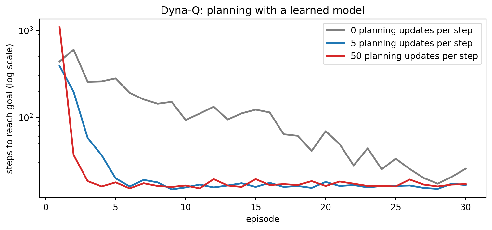
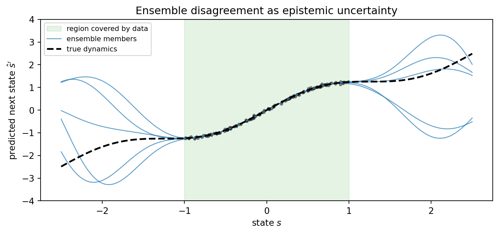

Every method in the previous chapters of this part learns by doing. Q-learning and DQN (Chapter 256) and the policy-gradient family (Chapter 257) all assume an agent that can act, watch what happens, and act again, as many times as it likes. In a video game that assumption is free. In a hospital, a warehouse, a power grid, a recommender system, or a robot that costs money every time it falls over, it is the most expensive assumption in the whole pipeline. Real decision problems usually come with the opposite situation: a large log of past decisions made by somebody else, and very little appetite for trial and error.
This chapter covers the two main responses to that constraint. Offline reinforcement learning (also called batch RL) learns a policy from a fixed dataset of transitions and never touches the environment during training. Model-based reinforcement learning learns a model of the environment from whatever data exists and then does most of its trial and error inside that model. The two ideas look different, but they share one theme that runs through the whole chapter: a learned quantity, whether a value function or a dynamics model, is trustworthy only where the data supports it, and the best algorithms in both families are the ones that know where that boundary lies.
We begin with offline RL, build a small example where naive offline Q-learning confidently picks a catastrophic action it has never seen, and fix it with a conservative penalty. We then turn to model-based RL, run Dyna-Q on a maze, look at how model ensembles measure their own ignorance, and survey the line of work from PETS and MBPO through the Dreamer world models and MuZero to where the field stands in 2026.
258.1 Part I: Offline Reinforcement Learning
258.1.1 The Offline Setting
We work in the Markov decision process of Chapter 255 with states \(s\), actions \(a\), reward \(r(s,a)\), transition kernel \(P(s'\mid s,a)\) and discount \(\gamma\). In offline RL we are handed a dataset \[
\mathcal{D} = \{(s_i, a_i, r_i, s'_i)\}_{i=1}^{N}
\] collected by one or more unknown behavior policies, which we summarize as a single \(\pi_\beta(a\mid s)\). The goal is the usual one, find a policy \(\pi\) that maximizes \(J(\pi) = \mathbb{E}_\pi\big[\sum_t \gamma^t r_t\big]\), with the crucial difference that we may not collect any new data while doing so.
Two neighbors of this problem appear elsewhere in the book. Off-policy evaluation, the task of estimating \(J(\pi)\) for a fixed \(\pi\) from logged data, is the evaluation half of offline RL and is developed for the one-step case in Chapter 254. Direct Preference Optimization in Chapter 270 is also an offline method: it trains a language model on a frozen set of comparisons and never samples from the policy during training. The difficulties described below are the reason DPO and online RLHF behave differently.
258.1.2 Distribution Shift and Extrapolation Error
Why not simply run Q-learning on the dataset? Q-learning is off-policy, so in principle it can learn from transitions generated by any behavior policy. The problem lives in the Bellman target, \[
y = r + \gamma \max_{a'} Q(s', a') .
\] The maximum ranges over all actions, including actions that \(\pi_\beta\) never took in state \(s'\). For those actions the dataset contains no information at all, so \(Q(s', a')\) is whatever the initializer or the function approximator happens to produce. Write the learned value as the truth plus an error, \(Q = Q^\star + \varepsilon\). Because the maximum of noisy estimates is biased upward, \[
\mathbb{E}\Big[\max_{a'} \big(Q^\star(s',a') + \varepsilon(s',a')\big)\Big] \,\ge\, \max_{a'} Q^\star(s',a') ,
\] and the bias is largest exactly where \(\varepsilon\) is least constrained, on out-of-distribution (OOD) actions. Online, this bias corrects itself: the agent tries the overvalued action, receives a disappointing reward, and the estimate comes down. Offline there is no such feedback. The overestimate is copied into the target of every predecessor state, discounted but compounded through bootstrapping, and the greedy policy finally steers toward the actions about which it knows the least. Fujimoto et al. (2019) [1] named this extrapolation error and showed that off-policy deep RL agents such as DDPG fail badly on fixed datasets, sometimes even on datasets generated by an expert.
The general lesson is that offline RL is a problem of distribution shift. The learned policy \(\pi\) visits state-action pairs according to its own distribution \(d^\pi(s,a)\), while every quantity was estimated under \(d^{\pi_\beta}(s,a)\). Theoretical guarantees for offline RL are stated in terms of how far apart those two distributions are, typically through a concentrability coefficient that bounds the ratio \(d^\pi / d^{\pi_\beta}\). If the policy wanders where the data does not go, no amount of data from elsewhere can save it.
The algorithms below are all ways of keeping \(\pi\) close to the support of \(\mathcal{D}\), and they differ mainly in where they apply the brake.
258.1.3 The Behavior Cloning Baseline
The simplest offline method ignores rewards entirely and imitates the data, \[
\mathcal{L}_{\text{BC}}(\theta) = -\,\mathbb{E}_{(s,a)\sim\mathcal{D}}\big[\log \pi_\theta(a\mid s)\big] .
\] Behavior cloning (BC) never leaves the data distribution, so it cannot suffer from extrapolation error. It also cannot do better than the behavior policy on average. A useful middle ground is filtered BC: keep only the trajectories with the highest returns (say the top 10 percent) and clone those. Filtered BC is embarrassingly simple, and it is a strong baseline that every offline RL paper should beat.
When does offline RL actually beat BC? Kumar et al. (2022) [7] give a precise answer. If the data is near-expert and the task is short, BC is hard to beat. Offline RL wins when the data is noisy or suboptimal, when the horizon is long, and when good behavior has to be assembled by stitching together pieces of different trajectories, which only a method that propagates value through the Bellman equation can do. BC can only copy, while dynamic programming can recombine.
258.1.4 Policy-Constraint Methods: BCQ and TD3+BC
The first family keeps the learned policy close to \(\pi_\beta\) explicitly.
Batch-Constrained Q-learning (BCQ) [1] fits a generative model \(G_\omega(s)\) of the behavior actions (a conditional variational autoencoder) and only ever considers actions that model would produce. At decision time it samples a handful of candidates \(a_j \sim G_\omega(s)\), nudges each by a small learned perturbation \(\xi_\phi(s, a_j)\) bounded in \([-\Phi, \Phi]\), and picks the best by \(Q\): \[
\pi(s) = \arg\max_{a_j + \xi_\phi(s, a_j)} Q_\theta\big(s,\, a_j + \xi_\phi(s, a_j)\big),
\qquad a_j \sim G_\omega(s) .
\] The maximum in the Bellman target is restricted to the same candidates, so OOD actions never enter the backup. BEAR [2] relaxes the constraint from matching the behavior distribution to matching its support, using a kernel MMD penalty, which allows the policy to concentrate on the best in-support actions rather than mimicking their frequencies.
TD3+BC [5] showed that much of this machinery is unnecessary. Take the TD3 actor-critic algorithm and add a behavior-cloning term to the actor loss: \[
\pi = \arg\max_\pi\, \mathbb{E}_{(s,a)\sim\mathcal{D}}
\Big[\lambda\, Q\big(s, \pi(s)\big) - \big(\pi(s) - a\big)^2\Big],
\qquad
\lambda = \frac{\alpha}{\frac{1}{N}\sum_{i} |Q(s_i, a_i)|} .
\] The normalization by the average absolute \(Q\) makes the trade-off between “maximize value” and “stay near the data” insensitive to the reward scale, and a single \(\alpha\) (the paper uses 2.5) works across benchmarks. It is a two-line change to a standard algorithm and was competitive with far more complex methods. A later re-examination [6] showed that with a few further design choices (layer normalization, larger batches, separate penalties for actor and critic) this minimalist recipe remains near the state of the art.
The second family leaves the policy free and instead makes the value function pessimistic about actions the data does not support. Conservative Q-Learning (CQL) [3] adds a regularizer to the ordinary Bellman error: \[
\min_{Q}\,
\alpha\, \mathbb{E}_{s\sim\mathcal{D}}\Big[\log \sum_{a} \exp Q(s,a) \,-\, \mathbb{E}_{a\sim\hat\pi_\beta(\cdot\mid s)} Q(s,a)\Big]
\,+\, \tfrac{1}{2}\, \mathbb{E}_{(s,a,s')\sim\mathcal{D}}\Big[\big(Q(s,a) - \hat{\mathcal{B}}^{\pi} \bar Q(s,a)\big)^2\Big] .
\] The log-sum-exp term pushes down on all actions in proportion to a softmax over current values, so it bites hardest on whichever action the \(Q\)-function currently likes best. The second term pushes back up on actions that actually appear in the data. The net effect is that only actions with data support can keep a high value.
The tabular version makes this precise. Differentiating the objective with respect to \(Q(s,\cdot)\) and setting the gradient to zero gives the fixed point \[
\hat Q(s,a) = \hat{\mathcal{B}}^\pi \hat Q(s,a) \,-\, \alpha\left(\frac{\mu(a\mid s)}{\hat\pi_\beta(a\mid s)} - 1\right),
\qquad \mu(\cdot\mid s) = \operatorname{softmax}\big(\hat Q(s,\cdot)\big),
\] so each action is penalized according to how much more the softmax policy likes it than the data does. For an action that never appears in state \(s\), \(\hat\pi_\beta(a\mid s) = 0\) and the penalty grows until the softmax assigns that action negligible mass. Kumar et al. (2020) [3] prove that with a large enough \(\alpha\), the learned value lower-bounds the true value of the policy, which converts overestimation (dangerous) into underestimation (merely conservative).
258.1.6 In-Sample Learning: Implicit Q-Learning
The third idea removes OOD actions from the backup altogether. Implicit Q-Learning (IQL) [4] never evaluates \(Q\) at an action that is not in the dataset. It replaces the maximum over actions with an expectile of the in-data action values. A state-value network is fit by asymmetric least squares, \[
\mathcal{L}_V(\psi) = \mathbb{E}_{(s,a)\sim\mathcal{D}}\Big[L_2^\tau\big(Q_{\bar\theta}(s,a) - V_\psi(s)\big)\Big],
\qquad
L_2^\tau(u) = \big|\tau - \mathbb{1}(u < 0)\big|\, u^2 ,
\] and the \(Q\)-function regresses on targets built from \(V\) rather than from a maximum, \[
\mathcal{L}_Q(\theta) = \mathbb{E}_{(s,a,s')\sim\mathcal{D}}\Big[\big(r + \gamma V_\psi(s') - Q_\theta(s,a)\big)^2\Big] .
\] With \(\tau = 0.5\) the expectile is the mean, which gives SARSA-style evaluation of the behavior policy. As \(\tau \to 1\) it approaches the maximum over actions that have support in the data, which is exactly the in-distribution greedy backup we want. The policy is then extracted by advantage-weighted regression, \[
\mathcal{L}_\pi(\phi) = -\,\mathbb{E}_{(s,a)\sim\mathcal{D}}\Big[\exp\big(\beta\,(Q_{\bar\theta}(s,a) - V_\psi(s))\big)\log \pi_\phi(a\mid s)\Big],
\] which is weighted behavior cloning: imitate the dataset, but imitate the good actions more. IQL is simple, stable, and became a default starting point, especially for offline-to-online fine-tuning.
258.1.7 Worked Example: Overestimation on Unseen Actions and the Conservative Fix
We now build the failure and the fix on a problem small enough to solve exactly. A chain of ten states leads from a start at state 0 to a goal at state 9. Each step costs \(-1\). Three actions are available: left, right, and a tempting jump that moves three states forward with probability 0.3 but otherwise falls off the chain with a reward of \(-20\) and ends the episode. Jumping is always a bad idea, and the optimal policy is to walk right.
The behavior policy that generated the log mostly walks, wanders left more often in the middle of the chain, and jumps only one time in a hundred. So the dataset contains many walks, a few jumps, and in several states no jumps at all.
import numpy as npimport matplotlib.pyplot as pltrng = np.random.default_rng(0)N_STATES, GOAL, GAMMA =10, 9, 0.95LEFT, RIGHT, JUMP =0, 1, 2N_ACT =3P_JUMP, FALL_REWARD =0.3, -20.0# Exact model as arrays: expected reward R[s,a] and continuation matrix# Pc[s,a,s'] that already excludes terminal outcomes (falls and reaching the goal).R_exp = np.zeros((N_STATES, N_ACT))Pc = np.zeros((N_STATES, N_ACT, N_STATES))outcomes = {} # (s, a) -> list of (prob, next_state, reward, done)for s inrange(N_STATES):for a inrange(N_ACT):if s == GOAL: outs = [(1.0, s, 0.0, True)]elif a == LEFT: outs = [(1.0, max(s -1, 0), -1.0, False)]elif a == RIGHT: outs = [(1.0, s +1, -1.0, s +1== GOAL)]else: s2 =min(s +3, GOAL) outs = [(P_JUMP, s2, -1.0, s2 == GOAL), (1- P_JUMP, s, FALL_REWARD, True)] outcomes[s, a] = outsfor p, s2, r, done in outs: R_exp[s, a] += p * rifnot done: Pc[s, a, s2] += pdef evaluate(pi_probs):"""Exact Q^pi for a (possibly stochastic) policy given as an (S, A) matrix.""" P_pi = np.einsum("sa,sat->st", pi_probs, Pc) r_pi = (pi_probs * R_exp).sum(1) V = np.linalg.solve(np.eye(N_STATES) - GAMMA * P_pi, r_pi)return R_exp + GAMMA * Pc @ Vdef greedy(Q):return np.eye(N_ACT)[Q.argmax(1)]# Optimal Q* by value iteration, for reference.Q_star = np.zeros((N_STATES, N_ACT))for _ inrange(1000): Q_star = R_exp + GAMMA * Pc @ Q_star.max(1)# Behavior policy: mostly right, more left in states 4-6, jump 1% of the time.beh = np.tile([0.30, 0.69, 0.01], (N_STATES, 1))beh[4:7] = [0.60, 0.39, 0.01]data = []for episode inrange(40): s =0for t inrange(40): a = rng.choice(N_ACT, p=beh[s]) outs = outcomes[s, a] p, s2, r, done = outs[rng.choice(len(outs), p=[o[0] for o in outs])] data.append((s, a, r, s2, float(done))) s = s2if done:breakS, A, R, S2, D =map(np.array, zip(*data))counts = np.zeros((N_STATES, N_ACT), dtype=int)np.add.at(counts, (S, A), 1)print(f"transitions in the offline dataset: {len(S)}")print("visit counts per state (columns: left, right, jump):")print(counts[:GOAL])print(f"states where 'jump' never appears: {np.flatnonzero(counts[:GOAL, JUMP] ==0).tolist()}")
transitions in the offline dataset: 1188
visit counts per state (columns: left, right, jump):
[[ 43 102 0]
[ 65 90 0]
[ 53 110 1]
[ 74 188 3]
[159 87 4]
[ 67 39 2]
[ 22 26 0]
[ 10 21 1]
[ 6 15 0]]
states where 'jump' never appears: [0, 1, 6, 8]
Now we fit \(Q\) from this fixed dataset with fitted Q-iteration, written as gradient descent on the sum of squared Bellman errors. Setting alpha=0 gives naive offline Q-learning. Setting alpha>0 adds the CQL penalty from the previous section, whose gradient with respect to \(Q(s,\cdot)\) for each logged transition is \(\alpha\big(\operatorname{softmax}(Q(s,\cdot)) - \mathbf{e}_{a}\big)\). Dividing each state’s gradient by its visit count turns the per-transition sums into the \(\hat\pi_\beta\)-weighted averages that appear in the fixed-point formula.
Note what happens to an action that never appears in a state under the naive objective: it receives no gradient at all and keeps its initial value of zero. Every real value in this problem is negative (each step costs \(-1\)), so an initial zero is wildly optimistic. In a neural network the same thing happens less visibly, an unseen action gets whatever value the network extrapolates, and nothing in the loss ever corrects it.
onehot_A = np.eye(N_ACT)[A]n_s = np.maximum(counts.sum(1), 1)[:, None]def fit_q(alpha, iters=4000, lr0=0.5):"""Fitted Q-iteration with an optional tabular CQL penalty.""" lr = lr0 / (1.0+ alpha) # keep the penalty step stable for large alpha Q = np.zeros((N_STATES, N_ACT))for _ inrange(iters): y = R + GAMMA * (1- D) * Q[S2].max(1) # Bellman target with max over ALL actions grad = np.zeros_like(Q) np.add.at(grad, (S, A), Q[S, A] - y) # squared Bellman errorif alpha >0: z = Q[S] - Q[S].max(1, keepdims=True) soft = np.exp(z) / np.exp(z).sum(1, keepdims=True) np.add.at(grad, S, alpha * (soft - onehot_A)) # CQL: push down softmax, push up data Q -= lr * grad / n_sreturn QV_beh = evaluate(beh)[0] @ beh[0]bc_policy = np.eye(N_ACT)[counts.argmax(1)]results = {"behavior policy": (np.nan, V_beh),"behavior cloning": (np.nan, (evaluate(bc_policy)[0] * bc_policy[0]).sum())}Q_naive = fit_q(0.0)Q_cql = fit_q(1.0)for name, Q in [("naive offline Q", Q_naive), ("CQL (alpha=1)", Q_cql)]: pi = greedy(Q) results[name] = (Q[0].max(), (evaluate(pi)[0] * pi[0]).sum())results["optimal"] = (np.nan, Q_star[0].max())names = {LEFT: "L", RIGHT: "R", JUMP: "J"}print(f"{'method':<18}{'estimated V(s0)':>16}{'true V(s0)':>12}")for k, (est, true) in results.items(): est_s =""if np.isnan(est) elsef"{est:.2f}"print(f"{k:<18}{est_s:>16}{true:>12.2f}")print("naive greedy policy:", "".join(names[a] for a in Q_naive.argmax(1)[:GOAL]))print("CQL greedy policy: ", "".join(names[a] for a in Q_cql.argmax(1)[:GOAL]))print("BC policy: ", "".join(names[a] for a in counts.argmax(1)[:GOAL]))
The table tells the whole story of extrapolation error. Naive offline Q-learning reports the most optimistic estimate of the start-state value of any method, and the policy it implies is the worst, because it jumps wherever the data never showed what jumping costs. Behavior cloning is safe from extrapolation but inherits the behavior policy’s habit of walking left in the middle of the chain, so it never reaches the goal. CQL keeps the value estimate honest and still improves on the data, because the “right” action is supported in every state, even where it was not the most frequent choice.
The penalty strength \(\alpha\) is a dial between those two failure modes. The next cell sweeps it and plots the learned value of the jump action against the truth.
alphas = [0.0, 0.03, 0.1, 0.3, 1.0, 3.0, 10.0]est_v, true_v = [], []for al in alphas: Q = fit_q(al) pi = greedy(Q) est_v.append(Q[0].max()) true_v.append((evaluate(pi)[0] * pi[0]).sum())for al, e, t inzip(alphas, est_v, true_v):print(f"alpha={al:<5} estimated V(s0)={e:7.2f} true return={t:7.2f}")fig, axes = plt.subplots(1, 2, figsize=(11, 3.8))ax = axes[0]states = np.arange(GOAL)ax.plot(states, Q_star[:GOAL, JUMP], "k-", lw=2, label="true $Q^*(s,\\mathrm{jump})$")ax.plot(states, Q_naive[:GOAL, JUMP], "o-", color="tab:red", label="naive offline Q")ax.plot(states, Q_cql[:GOAL, JUMP], "s-", color="tab:blue", label="CQL, $\\alpha=1$")unseen = counts[:GOAL, JUMP] ==0ax.scatter(states[unseen], Q_naive[:GOAL, JUMP][unseen], s=160, facecolors="none", edgecolors="tab:red", lw=1.5, label="jump never in data")ax.set_xlabel("state")ax.set_ylabel("value of the jump action")ax.legend(fontsize=8, loc="lower left")ax.set_title("Extrapolation on unseen actions")ax = axes[1]xs = np.arange(len(alphas))ax.plot(xs, true_v, "o-", color="tab:green", lw=2, label="true return of greedy policy")ax.plot(xs, est_v, "o--", color="tab:purple", label="estimated $V(s_0)$")ax.axhline(Q_star[0].max(), color="k", lw=1, ls=":", label="optimal")ax.axhline(results["behavior cloning"][1], color="tab:orange", lw=1, ls="-.", label="behavior cloning")ax.set_xticks(xs, [str(a) for a in alphas])ax.set_xlabel("CQL weight $\\alpha$")ax.set_ylabel("start-state value")ax.legend(fontsize=8, loc="lower right")ax.set_title("Conservatism is a dial")fig.tight_layout()plt.show()
Figure 258.1: Left: learned value of the never-safe jump action in each state. Naive offline Q-learning leaves unseen actions at their optimistic initial value, while the CQL penalty pushes them below the true value. Right: as the CQL weight alpha grows, the estimated start value (dashed) falls from wildly optimistic to below the true optimum, and the true return of the greedy policy (solid) is good only between the two extremes, collapsing to the behavior-cloning policy for very large alpha.
The left panel shows the mechanism. Wherever the jump action is missing from the data, the naive learner keeps its initial value of zero, far above the true value. Wherever the jump appears once or twice, its estimate is driven by a handful of lucky or unlucky draws. CQL pushes every unsupported action down. It actually undershoots the true value, which is the lower-bound property working as intended: for decision making, a pessimistic estimate of an action you will not take costs nothing.
The right panel shows why \(\alpha\) must be tuned. With no penalty the agent is reckless. With a moderate penalty it behaves well. With a very large penalty the log-sum-exp term dominates the Bellman error, the learned values track action frequencies rather than returns, and the greedy policy degenerates into behavior cloning, inheriting its left-walking habit. Every offline RL method has a dial like this one (the BC weight in TD3+BC, the expectile \(\tau\) in IQL, the support threshold in BCQ), and offline RL offers no clean way to tune it, since tuning by rolling out in the environment is exactly what the setting forbids. We return to this point under evaluation.
A different line of work asked whether RL needs Bellman backups at all. Decision Transformer [8] treats a trajectory as a sequence of tokens, \[
\tau = \big(\hat R_1, s_1, a_1,\, \hat R_2, s_2, a_2,\, \dots\big),
\qquad \hat R_t = \sum_{t' \ge t} r_{t'} ,
\] where \(\hat R_t\) is the return-to-go. A causal transformer is trained, exactly like a language model, to predict each action from the preceding tokens. At test time we prompt it with a desired return (say, the best return in the dataset) and the start state, and it generates actions that, if the conditioning works, achieve that return. Each step we subtract the observed reward from the conditioning return. The Trajectory Transformer [9] models states, actions, and rewards jointly and plans with beam search over the learned sequence model, which makes it a model-based method in disguise.
These methods were appealing because they reuse the scaling machinery of language models and have no bootstrapping instability. Two findings put them in perspective. Emmons et al. (2022) [10] showed that a plain feed-forward network conditioned on a return or a goal (they call the family RvS, reinforcement learning via supervised learning) matches the transformer on standard benchmarks, so the architecture was not the key ingredient. Paster et al. (2022) [11] showed a deeper limitation: in stochastic environments, conditioning on a high return teaches the model to imitate trajectories that were merely lucky, and it can prefer an action that occasionally produced a high return over one that reliably produces a good return. Return conditioning is behavior cloning on a filtered dataset, and it cannot stitch suboptimal pieces the way dynamic programming can. The sequence view nonetheless survives in a different place, the language model itself, and Chapter 259 treats text generation as precisely such a token-level decision process.
258.1.9 Expressive Policies: Diffusion and Flow Models
Offline datasets are often multimodal: different operators handle the same situation differently, and averaging their actions with a Gaussian policy produces an action nobody took. Since 2023 a productive direction has been to use generative models as policies. Diffusion-QL [12] represents the policy as a conditional diffusion model trained with a behavior-cloning denoising loss plus a term that pushes sampled actions toward high \(Q\). Flow Q-learning [13] uses a flow-matching policy for behavior cloning and then distills it into a one-step policy that maximizes \(Q\), avoiding the cost of backpropagating through the iterative sampler. The expressive generative model captures the support of the data, and the value function selects within it. This is the same “stay on the data, then improve” principle as BCQ, executed with much better density models.
258.1.10 Offline-to-Online Fine-Tuning
In practice offline data is usually a starting point, not the end. Once a policy is pre-trained offline, we would like to improve it with a modest amount of online interaction. Naively switching a conservative method to online training often causes an initial performance dip: the pessimistic \(Q\)-values are on a different scale from the online returns, and the agent unlearns its good initialization before it recovers. Cal-QL [14] fixes this by calibrating the conservative values so that they are pessimistic but never below the value of the behavior policy, which removes most of the dip with a one-line change to CQL. RLPD [15] takes the opposite approach: skip offline pre-training entirely, run a fast off-policy algorithm online, and simply mix the offline data into every batch in equal proportion with the online data, with layer normalization and a critic ensemble to control overestimation. The simplicity of RLPD and its strong results made it the standard baseline for this setting.
258.1.11 Evaluating Offline RL
The field converged for several years on a common benchmark suite of MuJoCo locomotion, maze navigation, and manipulation datasets, collected by random, medium, mixed “replay”, and expert policies. This D4RL-style suite reports a normalized score, \[
\text{score} = 100 \times \frac{R - R_{\text{random}}}{R_{\text{expert}} - R_{\text{random}}},
\] so that 0 is a random policy and 100 is the reference expert. Three cautions apply to every number in this literature. First, the locomotion datasets became saturated, and differences of a few points are within seed noise. Agarwal et al. (2021) [16] showed that reporting point estimates over a few seeds misleads systematically, and recommended interquartile means with stratified bootstrap confidence intervals, which you should use. Second, many papers tune hyperparameters per dataset by evaluating online, which quietly violates the offline assumption. An honest protocol fixes hyperparameters across tasks or selects them with off-policy evaluation (Chapter 254). Third, a benchmark built from a few behavior policies rewards a narrow skill. OGBench [17] responded with goal-conditioned tasks designed to stress stitching, long horizons, and stochasticity, and on it several methods that looked identical on older benchmarks separate clearly.
258.2 Part II: Model-Based Reinforcement Learning
258.2.1 Why Learn a Model?
A model-free agent turns each real transition into one or a few gradient steps and then mostly discards it. A model-based agent turns each transition into knowledge about how the world works, which it can then query as often as it likes. If the environment is expensive and computation is cheap, that trade is attractive. A learned model \(\hat P(s'\mid s,a)\) and \(\hat r(s,a)\) can be used in three ways: to generate extra simulated experience for a model-free learner (Dyna, MBPO, Dreamer), to plan action sequences directly at decision time (MPC, PETS, MuZero’s tree search), or both at once.
The cost is a new source of error. A policy optimized inside an imperfect model will find and exploit the model’s mistakes, exactly as an offline Q-learner exploits errors on unseen actions. This is the same distribution-shift problem from Part I in a different costume, and the same cure applies: trust the model where it has data and distrust it elsewhere.
258.2.2 Dyna: Learning, Planning, and Acting Together
Dyna [18, 19] is the template for the whole family. After each real step the agent performs its ordinary Q-learning update, \[
Q(s,a) \leftarrow Q(s,a) + \eta\Big[r + \gamma \max_{a'} Q(s',a') - Q(s,a)\Big],
\] records the transition in a model, and then performs \(n\) additional planning updates of the same form on state-action pairs drawn from the model’s memory, with \((r, s')\) supplied by the model rather than by the world. With \(n = 0\) this is ordinary Q-learning. With \(n > 0\) every real reward is propagated backward through the value table much faster, because the model replays the path that led to it many times per real step.
The cell below runs Dyna-Q on a small maze with a deterministic tabular model, averaging over several seeds.
H, W =6, 9WALLS = {(1, 2), (2, 2), (3, 2), (4, 5), (0, 7), (1, 7), (2, 7)}START, GOAL_CELL = (2, 0), (0, 8)MOVES = [(-1, 0), (1, 0), (0, -1), (0, 1)]def maze_step(s, a): r, c = s[0] + MOVES[a][0], s[1] + MOVES[a][1]ifnot (0<= r < H and0<= c < W) or (r, c) in WALLS: r, c = sreturn (r, c), float((r, c) == GOAL_CELL), (r, c) == GOAL_CELLdef dyna_q(n_plan, episodes=30, seed=0, eta=0.1, gamma=0.95, eps=0.1): rng = np.random.default_rng(seed) Q = np.zeros((H * W, 4)) model, keys, steps = {}, [], []for _ inrange(episodes): s, k = START, 0whileTrue: si = s[0] * W + s[1]if rng.random() < eps: a =int(rng.integers(4))else: # greedy with random tie-breaking a =int(rng.choice(np.flatnonzero(Q[si] == Q[si].max()))) s2, r, done = maze_step(s, a) s2i = s2[0] * W + s2[1] k +=1 Q[si, a] += eta * (r + gamma * (0.0if done else Q[s2i].max()) - Q[si, a]) # real updateif (si, a) notin model: keys.append((si, a)) model[(si, a)] = (r, s2i, done) # deterministic tabular modelfor j in rng.integers(len(keys), size=n_plan): # n planning updates ps, pa = keys[j] pr, ps2, pd = model[(ps, pa)] Q[ps, pa] += eta * (pr + gamma * (0.0if pd else Q[ps2].max()) - Q[ps, pa]) s = s2if done:break steps.append(k)return np.array(steps)fig, ax = plt.subplots(figsize=(8, 3.8))for n_plan, color in [(0, "tab:gray"), (5, "tab:blue"), (50, "tab:red")]: curves = np.array([dyna_q(n_plan, seed=sd) for sd inrange(5)]) mean_steps = curves.mean(0)print(f"n={n_plan:>2}: first episode = {mean_steps[0]:6.0f} steps, "f"mean of episodes 2-5 = {mean_steps[1:5].mean():6.1f}, "f"real steps in episodes 2-30 = {curves[:, 1:].sum(1).mean():6.0f}") ax.plot(np.arange(1, len(mean_steps) +1), mean_steps, lw=2, color=color, label=f"{n_plan} planning updates per step")ax.set_yscale("log")ax.set_xlabel("episode")ax.set_ylabel("steps to reach goal (log scale)")ax.legend()ax.set_title("Dyna-Q: planning with a learned model")fig.tight_layout()plt.show()
n= 0: first episode = 442 steps, mean of episodes 2-5 = 350.0, real steps in episodes 2-30 = 3349
n= 5: first episode = 391 steps, mean of episodes 2-5 = 77.8, real steps in episodes 2-30 = 721
n=50: first episode = 1096 steps, mean of episodes 2-5 = 22.2, real steps in episodes 2-30 = 511

Figure 258.2: Steps per episode for Dyna-Q on a 6 by 9 maze, averaged over seeds, for different numbers of planning updates per real step. Planning with the learned model propagates the goal reward through the value table much faster, so the agent finds a short path after far fewer real episodes.
The first episode is a random walk for every agent, and its length varies a lot from seed to seed, because until the goal is found there is no reward to propagate and planning has nothing to do. From the second episode on, the planning agents converge on a short path while plain Q-learning is still wandering. The number of real environment steps spent after the goal is first found, which is what costs money in a real system, drops sharply with planning. This is the entire promise of model-based RL in one picture. The tabular model here is perfect because the maze is deterministic and every stored transition is exact. Everything that follows is about what happens when the model has to be learned by a neural network in a continuous, stochastic world.
258.2.3 Learned Dynamics and Model Predictive Control
With continuous states and actions we fit a neural network \(\hat f_\theta(s,a)\) to predict \(s'\) (or \(s' - s\)) by regression on observed transitions. The most direct use of such a model is model predictive control (MPC): at every time step, search for the action sequence that maximizes predicted return over a short horizon \(H\), \[
a_{t:t+H-1}^\star = \arg\max_{a_{t:t+H-1}} \sum_{k=0}^{H-1} \gamma^k\, \hat r(\hat s_{t+k}, a_{t+k}),
\qquad \hat s_{t} = s_t,\quad \hat s_{k+1} = \hat f_\theta(\hat s_k, a_k),
\] execute only the first action \(a_t^\star\), observe the real next state, and re-plan. Re-planning every step corrects for model error, since the plan is always anchored at a real state. The optimization is usually done by random shooting or the cross-entropy method (CEM), which samples many action sequences, keeps the best fraction, refits a Gaussian to them, and repeats.
The weakness of long imagined rollouts is compounding error. If the one-step prediction error is \(\epsilon\) and the dynamics amplify perturbations by a factor up to \(L\) per step, the error after \(k\) steps can grow like \(\epsilon \sum_{j<k} L^{j}\). Long rollouts in a learned model drift into states the model was never trained on, where its predictions are arbitrary, and a planner will happily exploit them.
258.2.4 PETS: Probabilistic Ensembles and Uncertainty
PETS [20] made learned-model MPC competitive with strong model-free methods on continuous control at a fraction of the sample cost. Its key ingredient is to separate two kinds of uncertainty. Aleatoric uncertainty is the inherent noise of the environment, modeled by having each network output a Gaussian \(\mathcal{N}(\mu_\theta(s,a), \Sigma_\theta(s,a))\) and training with negative log-likelihood. Epistemic uncertainty is the model’s ignorance due to limited data, captured by training an ensemble of \(B\) such networks on bootstrap resamples of the data. Where data is plentiful the members agree. Where data is absent they disagree, because nothing forced them to agree. PETS propagates particles through randomly chosen ensemble members during planning, so plans that pass through uncertain regions receive a spread of predicted outcomes rather than a single overconfident one.
The cell below shows the epistemic half of that idea on a one-dimensional dynamics function. Each ensemble member is a random-feature regression fit to a bootstrap sample of transitions observed only in the middle of the state space.
rng = np.random.default_rng(1)def true_dynamics(s):return s +0.4* np.sin(2.5* s)s_data = rng.uniform(-1.0, 1.0, 120)s_next = true_dynamics(s_data) + rng.normal(0, 0.03, s_data.size)def fit_member(seed, n_feat=60, ridge=1e-3): r = np.random.default_rng(seed) w, b = r.normal(0, 2.0, n_feat), r.uniform(0, 2* np.pi, n_feat) feats =lambda x: np.cos(np.outer(x, w) + b) boot = r.integers(0, s_data.size, s_data.size) # bootstrap resample Phi = feats(s_data[boot]) coef = np.linalg.solve(Phi.T @ Phi + ridge * np.eye(n_feat), Phi.T @ s_next[boot])returnlambda x: feats(x) @ coefensemble = [fit_member(100+ m) for m inrange(5)]grid = np.linspace(-2.5, 2.5, 400)preds = np.array([f(grid) for f in ensemble])spread = preds.std(0)inside = np.abs(grid) <=1.0print(f"mean ensemble std inside the data: {spread[inside].mean():.3f}")print(f"mean ensemble std outside the data: {spread[~inside].mean():.3f}")fig, ax = plt.subplots(figsize=(8, 3.8))ax.axvspan(-1, 1, color="tab:green", alpha=0.12, label="region covered by data")for m, p inenumerate(preds): ax.plot(grid, p, lw=1, color="tab:blue", alpha=0.7, label="ensemble members"if m ==0elseNone)ax.plot(grid, true_dynamics(grid), "k--", lw=2, label="true dynamics")ax.scatter(s_data, s_next, s=8, color="k", alpha=0.4)ax.set_ylim(-4, 4)ax.set_xlabel("state $s$")ax.set_ylabel("predicted next state $\\hat s'$")ax.legend(fontsize=8, loc="upper left")ax.set_title("Ensemble disagreement as epistemic uncertainty")fig.tight_layout()plt.show()
mean ensemble std inside the data: 0.007
mean ensemble std outside the data: 1.052

Figure 258.3: An ensemble of learned dynamics models fit to transitions observed only in the shaded region. Inside the data the members agree with each other and with the true dynamics. Outside it they diverge, and their disagreement is a usable estimate of epistemic uncertainty, the quantity PETS plans with and MOPO subtracts from the reward.
The printed spreads quantify what the figure shows: the ensemble is far more uncertain outside the training region than inside it. This disagreement signal is cheap, needs no labels, and is the workhorse uncertainty estimate of model-based RL.
258.2.5 MBPO: Short Rollouts From Real States
Model-Based Policy Optimization (MBPO) [21] returns to the Dyna template with neural networks. It trains a probabilistic ensemble like PETS, but instead of planning it uses the model to generate data for a model-free learner (SAC, from Chapter 257). The central design choice comes from the compounding-error analysis. The paper bounds the gap between true and model-predicted returns by a term that grows with both the model error and the length of model rollouts, and concludes that rollouts should be short and branched from real states drawn from the replay buffer. Starting every imagined trajectory at a real state keeps it near the data, and keeping it short (often just one to a few steps) keeps compounding error small. MBPO matched the asymptotic performance of SAC on MuJoCo tasks with many times fewer environment samples, and its short-branched-rollout recipe became a standard component.
The same machinery gives offline model-based RL. MOPO [22] trains a model on the offline dataset and runs MBPO inside it, but replaces the model reward with a pessimistic one, \[
\tilde r(s,a) = \hat r(s,a) - \lambda\, u(s,a),
\] where \(u(s,a)\) is an uncertainty estimate such as the ensemble’s predicted variance. MOReL [23] does something cruder and equally effective: it marks state-action pairs where the ensemble disagrees too much as absorbing states with a large negative reward. These are the model-based counterparts of CQL, conservatism where the model is unsure instead of where the data is thin, and the two are the same thing seen from different sides.
258.2.6 World Models: The Dreamer Line
For high-dimensional observations such as images, predicting the next frame pixel by pixel is wasteful. World models learn a compact latent state and predict forward in that latent space. Ha and Schmidhuber (2018) [24] trained a variational autoencoder on frames and a recurrent network on the latent sequence and showed that a controller could be trained entirely inside the learned “dream” and then transferred to the real environment.
The Dreamer line by Hafner and colleagues made this the basis of a general-purpose algorithm. All versions use a recurrent state-space model (RSSM) with a deterministic recurrent state \(h_t\) and a stochastic latent \(z_t\): \[
h_t = f_\phi(h_{t-1}, z_{t-1}, a_{t-1}),\qquad
z_t \sim q_\phi(z_t \mid h_t, x_t),\qquad
\hat z_t \sim p_\phi(\hat z_t \mid h_t),
\] trained to reconstruct observations \(x_t\), predict rewards and episode continuation, and keep the prior \(p_\phi\) close to the posterior \(q_\phi\) by a KL term. An actor and a critic are then trained purely on imagined latent trajectories, using \(\lambda\)-returns computed from predicted rewards and values. Because imagined rollouts are differentiable and cheap, thousands can be generated per real step.
Dreamer [25] introduced learning behaviors by backpropagating value gradients through imagined trajectories, on visual continuous-control tasks.
DreamerV2 [26] switched to discrete categorical latents and was the first world-model agent to reach human-level performance on the Atari benchmark.
DreamerV3 [27] is the version that changed the field’s view of model-based RL. With a single fixed set of hyperparameters it outperformed specialized methods across more than 150 tasks spanning Atari, continuous control from pixels and from states, 3D environments, and Minecraft, where it was the first algorithm to collect diamonds from scratch without human demonstrations or curricula. The robustness came from unglamorous techniques: predicting rewards and values in symlog space, \(\operatorname{symlog}(x) = \operatorname{sign}(x)\ln(|x| + 1)\), so that targets of any magnitude are well conditioned, a two-hot categorical value loss, normalizing returns by a running percentile range, and “free bits” to stop the KL term from collapsing the latent. The 2025 Nature publication of DreamerV3 marked the point at which world-model RL became a default choice rather than a specialty.
Two other lines replaced the RSSM with sequence models from generative modeling. IRIS [28] tokenizes frames with a discrete autoencoder and models the token sequence with an autoregressive transformer, and DIAMOND [29] uses a diffusion model as the world model, arguing that visual detail matters for control and that diffusion preserves it. TD-MPC2 [30] goes the other way, a decoder-free latent model trained only to predict rewards and values, combined with short-horizon MPC, which scaled to a single agent of a few hundred million parameters controlling 80 tasks across different robots and action spaces. Genie [31] trained a large world model on unlabeled internet videos of 2D games, learning a latent action space without any action labels and producing playable environments from a single image prompt. That last step connects world models to the generative video models of the rest of the book.
258.2.7 MuZero: Planning With a Value-Equivalent Model
MuZero [32] took a radical position on what a model should predict. It does not try to predict observations at all. It learns three functions: a representation \(s^0 = h_\theta(o_1,\dots,o_t)\) that encodes the history, a dynamics function \((r^k, s^k) = g_\theta(s^{k-1}, a^k)\) that steps the latent state, and a prediction function \((p^k, v^k) = f_\theta(s^k)\) that outputs a policy and a value. All three are trained end to end so that, along the actually executed action sequence, the predicted rewards match observed rewards, the predicted values match bootstrapped returns, and the predicted policies match the visit distribution of a Monte Carlo tree search run on the learned model. The model is value-equivalent: it is only required to be correct about the quantities planning needs, not about pixels. With this, MuZero matched AlphaZero at Go, chess, and shogi without being told the rules, and set a new state of the art on Atari at the time. EfficientZero [33] added self-supervised consistency losses and other changes that reached human-level Atari performance with about two hours of real-time game experience per game.
The MuZero recipe also illustrates the general relationship between learning and search that reappears for language models in Chapter 259: a learned policy and value make search tractable, and search produces better targets for the learned policy and value.
258.2.8 Where Model-Based and Offline RL Stand in 2026
The picture at the time of writing is roughly as follows.
Sample efficiency is a solved argument. On interaction-limited benchmarks, model-based agents (the EfficientZero line, DIAMOND, DreamerV3, TD-MPC2) are clearly ahead of model-free ones. The open question is no longer whether learned models help but how large and general they should be.
World models are converging with generative video models. Genie showed that action-controllable world models can be learned from unlabeled video, and industrial labs have since announced larger interactive video world models, mostly without peer-reviewed papers. In a 2025 preprint, the Dreamer authors reported an agent that learned to obtain diamonds in Minecraft purely from a fixed offline dataset by training inside a scalable transformer world model, which joins the two halves of this chapter: offline RL performed through a world model. Treat claims that are not yet peer reviewed with appropriate caution.
Offline RL has matured into a toolkit. The default recipe is an expressive generative policy that captures the data’s support (diffusion or flow), an in-sample or lightly conservative value function (IQL-style expectiles, TD3+BC-style constraints, or calibrated CQL), and online fine-tuning with mixed replay (RLPD-style) whenever any interaction is allowed. Evaluation has moved to harder suites such as OGBench with proper statistical reporting.
Robotics remains imitation-heavy. Real-robot deployment is still dominated by large-scale behavior cloning with diffusion or flow policies, with offline RL and learned world models used to filter, rank, or fine-tune. The data, not the algorithm, is usually the bottleneck.
Language models are the largest offline-to-online system in existence. Pre-training is behavior cloning on human text, preference optimization is largely offline (Chapter 270), and the reasoning-model RL of Chapter 259 is online fine-tuning from that offline initialization, complete with its own versions of distribution shift, conservatism (the KL penalty), and model exploitation (reward hacking).
258.3 Pitfalls
Trusting the value estimate. In offline RL the training loss and the estimated value of your policy are both computed on the data you used for training, and both can look excellent while the policy is terrible, as the naive learner in Figure 258.1 demonstrates. Never report an offline policy’s quality from its own \(Q\)-function. Use held-out off-policy evaluation, or a small, safe online evaluation if one is possible.
Online hyperparameter tuning in disguise. If you select \(\alpha\), \(\tau\), or the BC weight by evaluating each candidate in the environment, your method is not offline. Fix hyperparameters across tasks, select with off-policy evaluation, or report the online budget honestly.
Skipping the BC baseline. On near-expert data, behavior cloning or filtered BC frequently matches or beats offline RL. Always report it.
Return conditioning in stochastic environments. Decision Transformer and other return-conditioned methods can imitate luck rather than skill. If outcomes are noisy, prefer methods with value functions.
Long model rollouts. Compounding error grows quickly with horizon. Branch short rollouts from real states (MBPO), re-plan every step (MPC), or keep the world model in a learned latent space where errors matter less (Dreamer, MuZero).
Model exploitation. An optimizer will find the places where the model is wrong in its favor. Use ensembles, penalize disagreement (MOPO, MOReL), and check imagined returns against real returns regularly. A widening gap is the first sign that the policy is gaming the model.
Confusing aleatoric and epistemic uncertainty. A single probabilistic network models environment noise but not its own ignorance. Only the ensemble (or another epistemic method) tells you where the model has no data, which is the quantity that conservatism needs.
258.4 References
Fujimoto, S., Meger, D., and Precup, D. “Off-Policy Deep Reinforcement Learning without Exploration” (BCQ). Proceedings of the 36th International Conference on Machine Learning (ICML), PMLR 97, 2019, 2052–2062. https://proceedings.mlr.press/v97/fujimoto19a.html
Kumar, A., Fu, J., Soh, M., Tucker, G., and Levine, S. “Stabilizing Off-Policy Q-Learning via Bootstrapping Error Reduction” (BEAR). Advances in Neural Information Processing Systems 32 (NeurIPS), 2019. https://proceedings.neurips.cc/paper/2019/hash/c2073ffa77b5357a498057413bb09d3a-Abstract.html
Kumar, A., Zhou, A., Tucker, G., and Levine, S. “Conservative Q-Learning for Offline Reinforcement Learning.” Advances in Neural Information Processing Systems 33 (NeurIPS), 2020. https://proceedings.neurips.cc/paper/2020/hash/0d2b2061826a5df3221116a5085a6052-Abstract.html
Kostrikov, I., Nair, A., and Levine, S. “Offline Reinforcement Learning with Implicit Q-Learning.” International Conference on Learning Representations (ICLR), 2022. https://openreview.net/forum?id=68n2s9ZJWF8
Fujimoto, S. and Gu, S. S. “A Minimalist Approach to Offline Reinforcement Learning” (TD3+BC). Advances in Neural Information Processing Systems 34 (NeurIPS), 2021. https://proceedings.neurips.cc/paper/2021/hash/a8166da05c5a094f7dc03724b41886e5-Abstract.html
Tarasov, D., Kurenkov, V., Nikulin, A., and Kolesnikov, S. “Revisiting the Minimalist Approach to Offline Reinforcement Learning” (ReBRAC). Advances in Neural Information Processing Systems 36 (NeurIPS), 2023. https://proceedings.neurips.cc/paper_files/paper/2023/hash/26cce1e512793f2072fd27c391e04652-Abstract-Conference.html
Kumar, A., Hong, J., Singh, A., and Levine, S. “Should I Run Offline Reinforcement Learning or Behavioral Cloning?” International Conference on Learning Representations (ICLR), 2022. https://iclr.cc/virtual/2022/poster/6654
Chen, L., Lu, K., Rajeswaran, A., Lee, K., Grover, A., Laskin, M., Abbeel, P., Srinivas, A., and Mordatch, I. “Decision Transformer: Reinforcement Learning via Sequence Modeling.” Advances in Neural Information Processing Systems 34 (NeurIPS), 2021. https://proceedings.neurips.cc/paper/2021/hash/7f489f642a0ddb10272b5c31057f0663-Abstract.html
Janner, M., Li, Q., and Levine, S. “Offline Reinforcement Learning as One Big Sequence Modeling Problem” (Trajectory Transformer). Advances in Neural Information Processing Systems 34 (NeurIPS), 2021. https://proceedings.neurips.cc/paper/2021/hash/099fe6b0b444c23836c4a5d07346082b-Abstract.html
Emmons, S., Eysenbach, B., Kostrikov, I., and Levine, S. “RvS: What is Essential for Offline RL via Supervised Learning?” International Conference on Learning Representations (ICLR), 2022. https://iclr.cc/virtual/2022/poster/6088
Paster, K., McIlraith, S., and Ba, J. “You Can’t Count on Luck: Why Decision Transformers and RvS Fail in Stochastic Environments.” Advances in Neural Information Processing Systems 35 (NeurIPS), 2022. https://proceedings.neurips.cc/paper_files/paper/2022/hash/fe90657b12193c7b52a3418bdc351807-Abstract-Conference.html
Wang, Z., Hunt, J. J., and Zhou, M. “Diffusion Policies as an Expressive Policy Class for Offline Reinforcement Learning” (Diffusion-QL). International Conference on Learning Representations (ICLR), 2023. https://iclr.cc/virtual/2023/poster/11133
Park, S., Li, Q., and Levine, S. “Flow Q-Learning.” Proceedings of the 42nd International Conference on Machine Learning (ICML), PMLR 267, 2025. https://icml.cc/virtual/2025/poster/45637
Nakamoto, M., Zhai, Y., Singh, A., Mark, M. S., Ma, Y., Finn, C., Kumar, A., and Levine, S. “Cal-QL: Calibrated Offline RL Pre-Training for Efficient Online Fine-Tuning.” Advances in Neural Information Processing Systems 36 (NeurIPS), 2023. https://proceedings.neurips.cc/paper_files/paper/2023/hash/c44a04289beaf0a7d968a94066a1d696-Abstract-Conference.html
Ball, P. J., Smith, L., Kostrikov, I., and Levine, S. “Efficient Online Reinforcement Learning with Offline Data” (RLPD). Proceedings of the 40th International Conference on Machine Learning (ICML), PMLR 202, 2023, 1577–1594. https://proceedings.mlr.press/v202/ball23a.html
Agarwal, R., Schwarzer, M., Castro, P. S., Courville, A., and Bellemare, M. G. “Deep Reinforcement Learning at the Edge of the Statistical Precipice.” Advances in Neural Information Processing Systems 34 (NeurIPS), 2021. https://proceedings.neurips.cc/paper/2021/hash/f514cec81cb148559cf475e7426eed5e-Abstract.html
Park, S., Frans, K., Eysenbach, B., and Levine, S. “OGBench: Benchmarking Offline Goal-Conditioned RL.” International Conference on Learning Representations (ICLR), 2025. https://iclr.cc/virtual/2025/poster/29950
Sutton, R. S. “Integrated Architectures for Learning, Planning, and Reacting Based on Approximating Dynamic Programming” (Dyna). Proceedings of the Seventh International Conference on Machine Learning (ICML), 1990, 216–224. https://doi.org/10.1016/B978-1-55860-141-3.50030-4
Sutton, R. S. and Barto, A. G. Reinforcement Learning: An Introduction, 2nd edition. MIT Press, 2018. http://incompleteideas.net/book/the-book-2nd.html
Chua, K., Calandra, R., McAllister, R., and Levine, S. “Deep Reinforcement Learning in a Handful of Trials using Probabilistic Dynamics Models” (PETS). Advances in Neural Information Processing Systems 31 (NeurIPS), 2018. https://proceedings.neurips.cc/paper/2018/hash/3de568f8597b94bda53149c7d7f5958c-Abstract.html
Janner, M., Fu, J., Zhang, M., and Levine, S. “When to Trust Your Model: Model-Based Policy Optimization” (MBPO). Advances in Neural Information Processing Systems 32 (NeurIPS), 2019. https://proceedings.neurips.cc/paper/2019/hash/5faf461eff3099671ad63c6f3f094f7f-Abstract.html
Yu, T., Thomas, G., Yu, L., Ermon, S., Zou, J., Levine, S., Finn, C., and Ma, T. “MOPO: Model-based Offline Policy Optimization.” Advances in Neural Information Processing Systems 33 (NeurIPS), 2020. https://proceedings.neurips.cc/paper/2020/hash/a322852ce0df73e204b7e67cbbef0d0a-Abstract.html
Kidambi, R., Rajeswaran, A., Netrapalli, P., and Joachims, T. “MOReL: Model-Based Offline Reinforcement Learning.” Advances in Neural Information Processing Systems 33 (NeurIPS), 2020. https://proceedings.neurips.cc/paper/2020/hash/f7efa4f864ae9b88d43527f4b14f750f-Abstract.html
Ha, D. and Schmidhuber, J. “Recurrent World Models Facilitate Policy Evolution.” Advances in Neural Information Processing Systems 31 (NeurIPS), 2018. https://proceedings.neurips.cc/paper/2018/hash/2de5d16682c3c35007e4e92982f1a2ba-Abstract.html
Hafner, D., Lillicrap, T., Ba, J., and Norouzi, M. “Dream to Control: Learning Behaviors by Latent Imagination” (Dreamer). International Conference on Learning Representations (ICLR), 2020. https://openreview.net/forum?id=S1lOTC4tDS
Hafner, D., Lillicrap, T., Norouzi, M., and Ba, J. “Mastering Atari with Discrete World Models” (DreamerV2). International Conference on Learning Representations (ICLR), 2021. https://openreview.net/forum?id=0oabwyZbOu
Hafner, D., Pasukonis, J., Ba, J., and Lillicrap, T. “Mastering Diverse Control Tasks through World Models” (DreamerV3). Nature 640, 2025, 647–653. https://doi.org/10.1038/s41586-025-08744-2
Micheli, V., Alonso, E., and Fleuret, F. “Transformers are Sample-Efficient World Models” (IRIS). International Conference on Learning Representations (ICLR), 2023. https://iclr.cc/virtual/2023/poster/11839
Alonso, E., Jelley, A., Micheli, V., Kanervisto, A., Storkey, A., Pearce, T., and Fleuret, F. “Diffusion for World Modeling: Visual Details Matter in Atari” (DIAMOND). Advances in Neural Information Processing Systems 37 (NeurIPS), 2024. https://neurips.cc/virtual/2024/poster/95428
Hansen, N., Su, H., and Wang, X. “TD-MPC2: Scalable, Robust World Models for Continuous Control.” International Conference on Learning Representations (ICLR), 2024. https://proceedings.iclr.cc/paper_files/paper/2024/hash/cf73d57b6dcda32b293df7c2d5341f49-Abstract-Conference.html
Bruce, J. et al. “Genie: Generative Interactive Environments.” Proceedings of the 41st International Conference on Machine Learning (ICML), PMLR 235, 2024. https://proceedings.mlr.press/v235/bruce24a.html
Schrittwieser, J. et al. “Mastering Atari, Go, Chess and Shogi by Planning with a Learned Model” (MuZero). Nature 588, 2020, 604–609. https://doi.org/10.1038/s41586-020-03051-4
Ye, W., Liu, S., Kurutach, T., Abbeel, P., and Gao, Y. “Mastering Atari Games with Limited Data” (EfficientZero). Advances in Neural Information Processing Systems 34 (NeurIPS), 2021. https://proceedings.neurips.cc/paper/2021/hash/d5eca8dc3820cad9fe56a3bafda65ca1-Abstract.html
How to cite this chapter
Nguyen, M. (2026). Offline and Model-Based Reinforcement Learning. In AI in Action: A Reference for Artificial Intelligence. https://mikenguyen13.github.io/ai_in_action/650-offline-model-based-rl.html
BibTeX
@incollection{nguyen2026aiinaction-650offlinemodelbasedrl,
author = {Nguyen, Mike},
title = {{Offline and Model-Based Reinforcement Learning}},
booktitle = {{AI in Action: A Reference for Artificial Intelligence}},
year = {2026},
url = {https://mikenguyen13.github.io/ai_in_action/650-offline-model-based-rl.html},
note = {Online book}
}
Source Code
# Offline and Model-Based Reinforcement Learning {#sec-offline-model-based-rl}Every method in the previous chapters of this part learns by doing. Q-learning and DQN (@sec-td-q-learning) and the policy-gradient family (@sec-policy-gradient-actor-critic) all assume an agent that can act, watch what happens, and act again, as many times as it likes. In a video game that assumption is free. In a hospital, a warehouse, a power grid, a recommender system, or a robot that costs money every time it falls over, it is the most expensive assumption in the whole pipeline. Real decision problems usually come with the opposite situation: a large log of past decisions made by somebody else, and very little appetite for trial and error.This chapter covers the two main responses to that constraint. **Offline reinforcement learning** (also called batch RL) learns a policy from a fixed dataset of transitions and never touches the environment during training. **Model-based reinforcement learning** learns a model of the environment from whatever data exists and then does most of its trial and error inside that model. The two ideas look different, but they share one theme that runs through the whole chapter: a learned quantity, whether a value function or a dynamics model, is trustworthy only where the data supports it, and the best algorithms in both families are the ones that know where that boundary lies.We begin with offline RL, build a small example where naive offline Q-learning confidently picks a catastrophic action it has never seen, and fix it with a conservative penalty. We then turn to model-based RL, run Dyna-Q on a maze, look at how model ensembles measure their own ignorance, and survey the line of work from PETS and MBPO through the Dreamer world models and MuZero to where the field stands in 2026.## Part I: Offline Reinforcement Learning### The Offline SettingWe work in the Markov decision process of @sec-markov-decision-processes with states $s$, actions $a$, reward $r(s,a)$, transition kernel $P(s'\mid s,a)$ and discount $\gamma$. In offline RL we are handed a dataset$$\mathcal{D} = \{(s_i, a_i, r_i, s'_i)\}_{i=1}^{N}$$collected by one or more unknown **behavior policies**, which we summarize as a single $\pi_\beta(a\mid s)$. The goal is the usual one, find a policy $\pi$ that maximizes $J(\pi) = \mathbb{E}_\pi\big[\sum_t \gamma^t r_t\big]$, with the crucial difference that we may not collect any new data while doing so.Two neighbors of this problem appear elsewhere in the book. Off-policy evaluation, the task of estimating $J(\pi)$ for a fixed $\pi$ from logged data, is the evaluation half of offline RL and is developed for the one-step case in @sec-contextual-bandits-ope. Direct Preference Optimization in @sec-preference-optimization-rlhf-dpo is also an offline method: it trains a language model on a frozen set of comparisons and never samples from the policy during training. The difficulties described below are the reason DPO and online RLHF behave differently.### Distribution Shift and Extrapolation ErrorWhy not simply run Q-learning on the dataset? Q-learning is off-policy, so in principle it can learn from transitions generated by any behavior policy. The problem lives in the Bellman target,$$y = r + \gamma \max_{a'} Q(s', a') .$$The maximum ranges over **all** actions, including actions that $\pi_\beta$ never took in state $s'$. For those actions the dataset contains no information at all, so $Q(s', a')$ is whatever the initializer or the function approximator happens to produce. Write the learned value as the truth plus an error, $Q = Q^\star + \varepsilon$. Because the maximum of noisy estimates is biased upward,$$\mathbb{E}\Big[\max_{a'} \big(Q^\star(s',a') + \varepsilon(s',a')\big)\Big] \,\ge\, \max_{a'} Q^\star(s',a') ,$$and the bias is largest exactly where $\varepsilon$ is least constrained, on out-of-distribution (OOD) actions. Online, this bias corrects itself: the agent tries the overvalued action, receives a disappointing reward, and the estimate comes down. Offline there is no such feedback. The overestimate is copied into the target of every predecessor state, discounted but compounded through bootstrapping, and the greedy policy finally steers toward the actions about which it knows the least. Fujimoto et al. (2019) [1] named this **extrapolation error** and showed that off-policy deep RL agents such as DDPG fail badly on fixed datasets, sometimes even on datasets generated by an expert.The general lesson is that offline RL is a problem of **distribution shift**. The learned policy $\pi$ visits state-action pairs according to its own distribution $d^\pi(s,a)$, while every quantity was estimated under $d^{\pi_\beta}(s,a)$. Theoretical guarantees for offline RL are stated in terms of how far apart those two distributions are, typically through a concentrability coefficient that bounds the ratio $d^\pi / d^{\pi_\beta}$. If the policy wanders where the data does not go, no amount of data from elsewhere can save it.The algorithms below are all ways of keeping $\pi$ close to the support of $\mathcal{D}$, and they differ mainly in where they apply the brake.### The Behavior Cloning BaselineThe simplest offline method ignores rewards entirely and imitates the data,$$\mathcal{L}_{\text{BC}}(\theta) = -\,\mathbb{E}_{(s,a)\sim\mathcal{D}}\big[\log \pi_\theta(a\mid s)\big] .$$Behavior cloning (BC) never leaves the data distribution, so it cannot suffer from extrapolation error. It also cannot do better than the behavior policy on average. A useful middle ground is **filtered BC**: keep only the trajectories with the highest returns (say the top 10 percent) and clone those. Filtered BC is embarrassingly simple, and it is a strong baseline that every offline RL paper should beat.When does offline RL actually beat BC? Kumar et al. (2022) [7] give a precise answer. If the data is near-expert and the task is short, BC is hard to beat. Offline RL wins when the data is noisy or suboptimal, when the horizon is long, and when good behavior has to be assembled by **stitching** together pieces of different trajectories, which only a method that propagates value through the Bellman equation can do. BC can only copy, while dynamic programming can recombine.### Policy-Constraint Methods: BCQ and TD3+BCThe first family keeps the learned policy close to $\pi_\beta$ explicitly.**Batch-Constrained Q-learning (BCQ)** [1] fits a generative model $G_\omega(s)$ of the behavior actions (a conditional variational autoencoder) and only ever considers actions that model would produce. At decision time it samples a handful of candidates $a_j \sim G_\omega(s)$, nudges each by a small learned perturbation $\xi_\phi(s, a_j)$ bounded in $[-\Phi, \Phi]$, and picks the best by $Q$:$$\pi(s) = \arg\max_{a_j + \xi_\phi(s, a_j)} Q_\theta\big(s,\, a_j + \xi_\phi(s, a_j)\big),\qquad a_j \sim G_\omega(s) .$$The maximum in the Bellman target is restricted to the same candidates, so OOD actions never enter the backup. BEAR [2] relaxes the constraint from matching the behavior distribution to matching its **support**, using a kernel MMD penalty, which allows the policy to concentrate on the best in-support actions rather than mimicking their frequencies.**TD3+BC** [5] showed that much of this machinery is unnecessary. Take the TD3 actor-critic algorithm and add a behavior-cloning term to the actor loss:$$\pi = \arg\max_\pi\, \mathbb{E}_{(s,a)\sim\mathcal{D}}\Big[\lambda\, Q\big(s, \pi(s)\big) - \big(\pi(s) - a\big)^2\Big],\qquad\lambda = \frac{\alpha}{\frac{1}{N}\sum_{i} |Q(s_i, a_i)|} .$$The normalization by the average absolute $Q$ makes the trade-off between "maximize value" and "stay near the data" insensitive to the reward scale, and a single $\alpha$ (the paper uses 2.5) works across benchmarks. It is a two-line change to a standard algorithm and was competitive with far more complex methods. A later re-examination [6] showed that with a few further design choices (layer normalization, larger batches, separate penalties for actor and critic) this minimalist recipe remains near the state of the art.### Value-Regularization: Conservative Q-LearningThe second family leaves the policy free and instead makes the **value function** pessimistic about actions the data does not support. **Conservative Q-Learning (CQL)** [3] adds a regularizer to the ordinary Bellman error:$$\min_{Q}\,\alpha\, \mathbb{E}_{s\sim\mathcal{D}}\Big[\log \sum_{a} \exp Q(s,a) \,-\, \mathbb{E}_{a\sim\hat\pi_\beta(\cdot\mid s)} Q(s,a)\Big]\,+\, \tfrac{1}{2}\, \mathbb{E}_{(s,a,s')\sim\mathcal{D}}\Big[\big(Q(s,a) - \hat{\mathcal{B}}^{\pi} \bar Q(s,a)\big)^2\Big] .$$The log-sum-exp term pushes down on all actions in proportion to a softmax over current values, so it bites hardest on whichever action the $Q$-function currently likes best. The second term pushes back up on actions that actually appear in the data. The net effect is that only actions with data support can keep a high value.The tabular version makes this precise. Differentiating the objective with respect to $Q(s,\cdot)$ and setting the gradient to zero gives the fixed point$$\hat Q(s,a) = \hat{\mathcal{B}}^\pi \hat Q(s,a) \,-\, \alpha\left(\frac{\mu(a\mid s)}{\hat\pi_\beta(a\mid s)} - 1\right),\qquad \mu(\cdot\mid s) = \operatorname{softmax}\big(\hat Q(s,\cdot)\big),$$so each action is penalized according to how much more the softmax policy likes it than the data does. For an action that never appears in state $s$, $\hat\pi_\beta(a\mid s) = 0$ and the penalty grows until the softmax assigns that action negligible mass. Kumar et al. (2020) [3] prove that with a large enough $\alpha$, the learned value lower-bounds the true value of the policy, which converts overestimation (dangerous) into underestimation (merely conservative).### In-Sample Learning: Implicit Q-LearningThe third idea removes OOD actions from the backup altogether. **Implicit Q-Learning (IQL)** [4] never evaluates $Q$ at an action that is not in the dataset. It replaces the maximum over actions with an **expectile** of the in-data action values. A state-value network is fit by asymmetric least squares,$$\mathcal{L}_V(\psi) = \mathbb{E}_{(s,a)\sim\mathcal{D}}\Big[L_2^\tau\big(Q_{\bar\theta}(s,a) - V_\psi(s)\big)\Big],\qquadL_2^\tau(u) = \big|\tau - \mathbb{1}(u < 0)\big|\, u^2 ,$$and the $Q$-function regresses on targets built from $V$ rather than from a maximum,$$\mathcal{L}_Q(\theta) = \mathbb{E}_{(s,a,s')\sim\mathcal{D}}\Big[\big(r + \gamma V_\psi(s') - Q_\theta(s,a)\big)^2\Big] .$$With $\tau = 0.5$ the expectile is the mean, which gives SARSA-style evaluation of the behavior policy. As $\tau \to 1$ it approaches the maximum over actions **that have support in the data**, which is exactly the in-distribution greedy backup we want. The policy is then extracted by advantage-weighted regression,$$\mathcal{L}_\pi(\phi) = -\,\mathbb{E}_{(s,a)\sim\mathcal{D}}\Big[\exp\big(\beta\,(Q_{\bar\theta}(s,a) - V_\psi(s))\big)\log \pi_\phi(a\mid s)\Big],$$which is weighted behavior cloning: imitate the dataset, but imitate the good actions more. IQL is simple, stable, and became a default starting point, especially for offline-to-online fine-tuning.### Worked Example: Overestimation on Unseen Actions and the Conservative FixWe now build the failure and the fix on a problem small enough to solve exactly. A chain of ten states leads from a start at state 0 to a goal at state 9. Each step costs $-1$. Three actions are available: **left**, **right**, and a tempting **jump** that moves three states forward with probability 0.3 but otherwise falls off the chain with a reward of $-20$ and ends the episode. Jumping is always a bad idea, and the optimal policy is to walk right.The behavior policy that generated the log mostly walks, wanders left more often in the middle of the chain, and jumps only one time in a hundred. So the dataset contains many walks, a few jumps, and in several states no jumps at all.```{python}#| code-fold: falseimport numpy as npimport matplotlib.pyplot as pltrng = np.random.default_rng(0)N_STATES, GOAL, GAMMA =10, 9, 0.95LEFT, RIGHT, JUMP =0, 1, 2N_ACT =3P_JUMP, FALL_REWARD =0.3, -20.0# Exact model as arrays: expected reward R[s,a] and continuation matrix# Pc[s,a,s'] that already excludes terminal outcomes (falls and reaching the goal).R_exp = np.zeros((N_STATES, N_ACT))Pc = np.zeros((N_STATES, N_ACT, N_STATES))outcomes = {} # (s, a) -> list of (prob, next_state, reward, done)for s inrange(N_STATES):for a inrange(N_ACT):if s == GOAL: outs = [(1.0, s, 0.0, True)]elif a == LEFT: outs = [(1.0, max(s -1, 0), -1.0, False)]elif a == RIGHT: outs = [(1.0, s +1, -1.0, s +1== GOAL)]else: s2 =min(s +3, GOAL) outs = [(P_JUMP, s2, -1.0, s2 == GOAL), (1- P_JUMP, s, FALL_REWARD, True)] outcomes[s, a] = outsfor p, s2, r, done in outs: R_exp[s, a] += p * rifnot done: Pc[s, a, s2] += pdef evaluate(pi_probs):"""Exact Q^pi for a (possibly stochastic) policy given as an (S, A) matrix.""" P_pi = np.einsum("sa,sat->st", pi_probs, Pc) r_pi = (pi_probs * R_exp).sum(1) V = np.linalg.solve(np.eye(N_STATES) - GAMMA * P_pi, r_pi)return R_exp + GAMMA * Pc @ Vdef greedy(Q):return np.eye(N_ACT)[Q.argmax(1)]# Optimal Q* by value iteration, for reference.Q_star = np.zeros((N_STATES, N_ACT))for _ inrange(1000): Q_star = R_exp + GAMMA * Pc @ Q_star.max(1)# Behavior policy: mostly right, more left in states 4-6, jump 1% of the time.beh = np.tile([0.30, 0.69, 0.01], (N_STATES, 1))beh[4:7] = [0.60, 0.39, 0.01]data = []for episode inrange(40): s =0for t inrange(40): a = rng.choice(N_ACT, p=beh[s]) outs = outcomes[s, a] p, s2, r, done = outs[rng.choice(len(outs), p=[o[0] for o in outs])] data.append((s, a, r, s2, float(done))) s = s2if done:breakS, A, R, S2, D =map(np.array, zip(*data))counts = np.zeros((N_STATES, N_ACT), dtype=int)np.add.at(counts, (S, A), 1)print(f"transitions in the offline dataset: {len(S)}")print("visit counts per state (columns: left, right, jump):")print(counts[:GOAL])print(f"states where 'jump' never appears: {np.flatnonzero(counts[:GOAL, JUMP] ==0).tolist()}")```Now we fit $Q$ from this fixed dataset with fitted Q-iteration, written as gradient descent on the sum of squared Bellman errors. Setting `alpha=0` gives naive offline Q-learning. Setting `alpha>0` adds the CQL penalty from the previous section, whose gradient with respect to $Q(s,\cdot)$ for each logged transition is $\alpha\big(\operatorname{softmax}(Q(s,\cdot)) - \mathbf{e}_{a}\big)$. Dividing each state's gradient by its visit count turns the per-transition sums into the $\hat\pi_\beta$-weighted averages that appear in the fixed-point formula.Note what happens to an action that never appears in a state under the naive objective: it receives no gradient at all and keeps its initial value of zero. Every real value in this problem is negative (each step costs $-1$), so an initial zero is wildly optimistic. In a neural network the same thing happens less visibly, an unseen action gets whatever value the network extrapolates, and nothing in the loss ever corrects it.```{python}#| code-fold: falseonehot_A = np.eye(N_ACT)[A]n_s = np.maximum(counts.sum(1), 1)[:, None]def fit_q(alpha, iters=4000, lr0=0.5):"""Fitted Q-iteration with an optional tabular CQL penalty.""" lr = lr0 / (1.0+ alpha) # keep the penalty step stable for large alpha Q = np.zeros((N_STATES, N_ACT))for _ inrange(iters): y = R + GAMMA * (1- D) * Q[S2].max(1) # Bellman target with max over ALL actions grad = np.zeros_like(Q) np.add.at(grad, (S, A), Q[S, A] - y) # squared Bellman errorif alpha >0: z = Q[S] - Q[S].max(1, keepdims=True) soft = np.exp(z) / np.exp(z).sum(1, keepdims=True) np.add.at(grad, S, alpha * (soft - onehot_A)) # CQL: push down softmax, push up data Q -= lr * grad / n_sreturn QV_beh = evaluate(beh)[0] @ beh[0]bc_policy = np.eye(N_ACT)[counts.argmax(1)]results = {"behavior policy": (np.nan, V_beh),"behavior cloning": (np.nan, (evaluate(bc_policy)[0] * bc_policy[0]).sum())}Q_naive = fit_q(0.0)Q_cql = fit_q(1.0)for name, Q in [("naive offline Q", Q_naive), ("CQL (alpha=1)", Q_cql)]: pi = greedy(Q) results[name] = (Q[0].max(), (evaluate(pi)[0] * pi[0]).sum())results["optimal"] = (np.nan, Q_star[0].max())names = {LEFT: "L", RIGHT: "R", JUMP: "J"}print(f"{'method':<18}{'estimated V(s0)':>16}{'true V(s0)':>12}")for k, (est, true) in results.items(): est_s =""if np.isnan(est) elsef"{est:.2f}"print(f"{k:<18}{est_s:>16}{true:>12.2f}")print("naive greedy policy:", "".join(names[a] for a in Q_naive.argmax(1)[:GOAL]))print("CQL greedy policy: ", "".join(names[a] for a in Q_cql.argmax(1)[:GOAL]))print("BC policy: ", "".join(names[a] for a in counts.argmax(1)[:GOAL]))```The table tells the whole story of extrapolation error. Naive offline Q-learning reports the most optimistic estimate of the start-state value of any method, and the policy it implies is the worst, because it jumps wherever the data never showed what jumping costs. Behavior cloning is safe from extrapolation but inherits the behavior policy's habit of walking left in the middle of the chain, so it never reaches the goal. CQL keeps the value estimate honest and still improves on the data, because the "right" action is supported in every state, even where it was not the most frequent choice.The penalty strength $\alpha$ is a dial between those two failure modes. The next cell sweeps it and plots the learned value of the jump action against the truth.```{python}#| label: fig-650-offline-overestimation#| fig-cap: "Left: learned value of the never-safe jump action in each state. Naive offline Q-learning leaves unseen actions at their optimistic initial value, while the CQL penalty pushes them below the true value. Right: as the CQL weight alpha grows, the estimated start value (dashed) falls from wildly optimistic to below the true optimum, and the true return of the greedy policy (solid) is good only between the two extremes, collapsing to the behavior-cloning policy for very large alpha."#| code-fold: falsealphas = [0.0, 0.03, 0.1, 0.3, 1.0, 3.0, 10.0]est_v, true_v = [], []for al in alphas: Q = fit_q(al) pi = greedy(Q) est_v.append(Q[0].max()) true_v.append((evaluate(pi)[0] * pi[0]).sum())for al, e, t inzip(alphas, est_v, true_v):print(f"alpha={al:<5} estimated V(s0)={e:7.2f} true return={t:7.2f}")fig, axes = plt.subplots(1, 2, figsize=(11, 3.8))ax = axes[0]states = np.arange(GOAL)ax.plot(states, Q_star[:GOAL, JUMP], "k-", lw=2, label="true $Q^*(s,\\mathrm{jump})$")ax.plot(states, Q_naive[:GOAL, JUMP], "o-", color="tab:red", label="naive offline Q")ax.plot(states, Q_cql[:GOAL, JUMP], "s-", color="tab:blue", label="CQL, $\\alpha=1$")unseen = counts[:GOAL, JUMP] ==0ax.scatter(states[unseen], Q_naive[:GOAL, JUMP][unseen], s=160, facecolors="none", edgecolors="tab:red", lw=1.5, label="jump never in data")ax.set_xlabel("state")ax.set_ylabel("value of the jump action")ax.legend(fontsize=8, loc="lower left")ax.set_title("Extrapolation on unseen actions")ax = axes[1]xs = np.arange(len(alphas))ax.plot(xs, true_v, "o-", color="tab:green", lw=2, label="true return of greedy policy")ax.plot(xs, est_v, "o--", color="tab:purple", label="estimated $V(s_0)$")ax.axhline(Q_star[0].max(), color="k", lw=1, ls=":", label="optimal")ax.axhline(results["behavior cloning"][1], color="tab:orange", lw=1, ls="-.", label="behavior cloning")ax.set_xticks(xs, [str(a) for a in alphas])ax.set_xlabel("CQL weight $\\alpha$")ax.set_ylabel("start-state value")ax.legend(fontsize=8, loc="lower right")ax.set_title("Conservatism is a dial")fig.tight_layout()plt.show()```The left panel shows the mechanism. Wherever the jump action is missing from the data, the naive learner keeps its initial value of zero, far above the true value. Wherever the jump appears once or twice, its estimate is driven by a handful of lucky or unlucky draws. CQL pushes every unsupported action down. It actually undershoots the true value, which is the lower-bound property working as intended: for decision making, a pessimistic estimate of an action you will not take costs nothing.The right panel shows why $\alpha$ must be tuned. With no penalty the agent is reckless. With a moderate penalty it behaves well. With a very large penalty the log-sum-exp term dominates the Bellman error, the learned values track action frequencies rather than returns, and the greedy policy degenerates into behavior cloning, inheriting its left-walking habit. Every offline RL method has a dial like this one (the BC weight in TD3+BC, the expectile $\tau$ in IQL, the support threshold in BCQ), and offline RL offers no clean way to tune it, since tuning by rolling out in the environment is exactly what the setting forbids. We return to this point under evaluation.### Sequence Modeling Views: Decision TransformerA different line of work asked whether RL needs Bellman backups at all. **Decision Transformer** [8] treats a trajectory as a sequence of tokens,$$\tau = \big(\hat R_1, s_1, a_1,\, \hat R_2, s_2, a_2,\, \dots\big),\qquad \hat R_t = \sum_{t' \ge t} r_{t'} ,$$where $\hat R_t$ is the **return-to-go**. A causal transformer is trained, exactly like a language model, to predict each action from the preceding tokens. At test time we prompt it with a desired return (say, the best return in the dataset) and the start state, and it generates actions that, if the conditioning works, achieve that return. Each step we subtract the observed reward from the conditioning return. The **Trajectory Transformer** [9] models states, actions, and rewards jointly and plans with beam search over the learned sequence model, which makes it a model-based method in disguise.These methods were appealing because they reuse the scaling machinery of language models and have no bootstrapping instability. Two findings put them in perspective. Emmons et al. (2022) [10] showed that a plain feed-forward network conditioned on a return or a goal (they call the family RvS, reinforcement learning via supervised learning) matches the transformer on standard benchmarks, so the architecture was not the key ingredient. Paster et al. (2022) [11] showed a deeper limitation: in **stochastic** environments, conditioning on a high return teaches the model to imitate trajectories that were merely lucky, and it can prefer an action that occasionally produced a high return over one that reliably produces a good return. Return conditioning is behavior cloning on a filtered dataset, and it cannot stitch suboptimal pieces the way dynamic programming can. The sequence view nonetheless survives in a different place, the language model itself, and @sec-rl-llm-reasoning treats text generation as precisely such a token-level decision process.### Expressive Policies: Diffusion and Flow ModelsOffline datasets are often **multimodal**: different operators handle the same situation differently, and averaging their actions with a Gaussian policy produces an action nobody took. Since 2023 a productive direction has been to use generative models as policies. **Diffusion-QL** [12] represents the policy as a conditional diffusion model trained with a behavior-cloning denoising loss plus a term that pushes sampled actions toward high $Q$. **Flow Q-learning** [13] uses a flow-matching policy for behavior cloning and then distills it into a one-step policy that maximizes $Q$, avoiding the cost of backpropagating through the iterative sampler. The expressive generative model captures the support of the data, and the value function selects within it. This is the same "stay on the data, then improve" principle as BCQ, executed with much better density models.### Offline-to-Online Fine-TuningIn practice offline data is usually a starting point, not the end. Once a policy is pre-trained offline, we would like to improve it with a modest amount of online interaction. Naively switching a conservative method to online training often causes an initial **performance dip**: the pessimistic $Q$-values are on a different scale from the online returns, and the agent unlearns its good initialization before it recovers. **Cal-QL** [14] fixes this by calibrating the conservative values so that they are pessimistic but never below the value of the behavior policy, which removes most of the dip with a one-line change to CQL. **RLPD** [15] takes the opposite approach: skip offline pre-training entirely, run a fast off-policy algorithm online, and simply mix the offline data into every batch in equal proportion with the online data, with layer normalization and a critic ensemble to control overestimation. The simplicity of RLPD and its strong results made it the standard baseline for this setting.### Evaluating Offline RLThe field converged for several years on a common benchmark suite of MuJoCo locomotion, maze navigation, and manipulation datasets, collected by random, medium, mixed "replay", and expert policies. This D4RL-style suite reports a **normalized score**,$$\text{score} = 100 \times \frac{R - R_{\text{random}}}{R_{\text{expert}} - R_{\text{random}}},$$so that 0 is a random policy and 100 is the reference expert. Three cautions apply to every number in this literature. First, the locomotion datasets became saturated, and differences of a few points are within seed noise. Agarwal et al. (2021) [16] showed that reporting point estimates over a few seeds misleads systematically, and recommended interquartile means with stratified bootstrap confidence intervals, which you should use. Second, many papers tune hyperparameters per dataset by evaluating online, which quietly violates the offline assumption. An honest protocol fixes hyperparameters across tasks or selects them with off-policy evaluation (@sec-contextual-bandits-ope). Third, a benchmark built from a few behavior policies rewards a narrow skill. **OGBench** [17] responded with goal-conditioned tasks designed to stress stitching, long horizons, and stochasticity, and on it several methods that looked identical on older benchmarks separate clearly.## Part II: Model-Based Reinforcement Learning### Why Learn a Model?A model-free agent turns each real transition into one or a few gradient steps and then mostly discards it. A model-based agent turns each transition into knowledge about how the world works, which it can then query as often as it likes. If the environment is expensive and computation is cheap, that trade is attractive. A learned model $\hat P(s'\mid s,a)$ and $\hat r(s,a)$ can be used in three ways: to generate extra simulated experience for a model-free learner (Dyna, MBPO, Dreamer), to plan action sequences directly at decision time (MPC, PETS, MuZero's tree search), or both at once.The cost is a new source of error. A policy optimized inside an imperfect model will find and exploit the model's mistakes, exactly as an offline Q-learner exploits errors on unseen actions. This is the same distribution-shift problem from Part I in a different costume, and the same cure applies: trust the model where it has data and distrust it elsewhere.### Dyna: Learning, Planning, and Acting Together**Dyna** [18, 19] is the template for the whole family. After each real step the agent performs its ordinary Q-learning update,$$Q(s,a) \leftarrow Q(s,a) + \eta\Big[r + \gamma \max_{a'} Q(s',a') - Q(s,a)\Big],$$records the transition in a model, and then performs $n$ additional **planning updates** of the same form on state-action pairs drawn from the model's memory, with $(r, s')$ supplied by the model rather than by the world. With $n = 0$ this is ordinary Q-learning. With $n > 0$ every real reward is propagated backward through the value table much faster, because the model replays the path that led to it many times per real step.The cell below runs Dyna-Q on a small maze with a deterministic tabular model, averaging over several seeds.```{python}#| label: fig-650-dyna-q#| fig-cap: "Steps per episode for Dyna-Q on a 6 by 9 maze, averaged over seeds, for different numbers of planning updates per real step. Planning with the learned model propagates the goal reward through the value table much faster, so the agent finds a short path after far fewer real episodes."#| code-fold: falseH, W =6, 9WALLS = {(1, 2), (2, 2), (3, 2), (4, 5), (0, 7), (1, 7), (2, 7)}START, GOAL_CELL = (2, 0), (0, 8)MOVES = [(-1, 0), (1, 0), (0, -1), (0, 1)]def maze_step(s, a): r, c = s[0] + MOVES[a][0], s[1] + MOVES[a][1]ifnot (0<= r < H and0<= c < W) or (r, c) in WALLS: r, c = sreturn (r, c), float((r, c) == GOAL_CELL), (r, c) == GOAL_CELLdef dyna_q(n_plan, episodes=30, seed=0, eta=0.1, gamma=0.95, eps=0.1): rng = np.random.default_rng(seed) Q = np.zeros((H * W, 4)) model, keys, steps = {}, [], []for _ inrange(episodes): s, k = START, 0whileTrue: si = s[0] * W + s[1]if rng.random() < eps: a =int(rng.integers(4))else: # greedy with random tie-breaking a =int(rng.choice(np.flatnonzero(Q[si] == Q[si].max()))) s2, r, done = maze_step(s, a) s2i = s2[0] * W + s2[1] k +=1 Q[si, a] += eta * (r + gamma * (0.0if done else Q[s2i].max()) - Q[si, a]) # real updateif (si, a) notin model: keys.append((si, a)) model[(si, a)] = (r, s2i, done) # deterministic tabular modelfor j in rng.integers(len(keys), size=n_plan): # n planning updates ps, pa = keys[j] pr, ps2, pd = model[(ps, pa)] Q[ps, pa] += eta * (pr + gamma * (0.0if pd else Q[ps2].max()) - Q[ps, pa]) s = s2if done:break steps.append(k)return np.array(steps)fig, ax = plt.subplots(figsize=(8, 3.8))for n_plan, color in [(0, "tab:gray"), (5, "tab:blue"), (50, "tab:red")]: curves = np.array([dyna_q(n_plan, seed=sd) for sd inrange(5)]) mean_steps = curves.mean(0)print(f"n={n_plan:>2}: first episode = {mean_steps[0]:6.0f} steps, "f"mean of episodes 2-5 = {mean_steps[1:5].mean():6.1f}, "f"real steps in episodes 2-30 = {curves[:, 1:].sum(1).mean():6.0f}") ax.plot(np.arange(1, len(mean_steps) +1), mean_steps, lw=2, color=color, label=f"{n_plan} planning updates per step")ax.set_yscale("log")ax.set_xlabel("episode")ax.set_ylabel("steps to reach goal (log scale)")ax.legend()ax.set_title("Dyna-Q: planning with a learned model")fig.tight_layout()plt.show()```The first episode is a random walk for every agent, and its length varies a lot from seed to seed, because until the goal is found there is no reward to propagate and planning has nothing to do. From the second episode on, the planning agents converge on a short path while plain Q-learning is still wandering. The number of real environment steps spent after the goal is first found, which is what costs money in a real system, drops sharply with planning. This is the entire promise of model-based RL in one picture. The tabular model here is perfect because the maze is deterministic and every stored transition is exact. Everything that follows is about what happens when the model has to be learned by a neural network in a continuous, stochastic world.### Learned Dynamics and Model Predictive ControlWith continuous states and actions we fit a neural network $\hat f_\theta(s,a)$ to predict $s'$ (or $s' - s$) by regression on observed transitions. The most direct use of such a model is **model predictive control (MPC)**: at every time step, search for the action sequence that maximizes predicted return over a short horizon $H$,$$a_{t:t+H-1}^\star = \arg\max_{a_{t:t+H-1}} \sum_{k=0}^{H-1} \gamma^k\, \hat r(\hat s_{t+k}, a_{t+k}),\qquad \hat s_{t} = s_t,\quad \hat s_{k+1} = \hat f_\theta(\hat s_k, a_k),$$execute only the first action $a_t^\star$, observe the real next state, and re-plan. Re-planning every step corrects for model error, since the plan is always anchored at a real state. The optimization is usually done by random shooting or the cross-entropy method (CEM), which samples many action sequences, keeps the best fraction, refits a Gaussian to them, and repeats.The weakness of long imagined rollouts is **compounding error**. If the one-step prediction error is $\epsilon$ and the dynamics amplify perturbations by a factor up to $L$ per step, the error after $k$ steps can grow like $\epsilon \sum_{j<k} L^{j}$. Long rollouts in a learned model drift into states the model was never trained on, where its predictions are arbitrary, and a planner will happily exploit them.### PETS: Probabilistic Ensembles and Uncertainty**PETS** [20] made learned-model MPC competitive with strong model-free methods on continuous control at a fraction of the sample cost. Its key ingredient is to separate two kinds of uncertainty. **Aleatoric** uncertainty is the inherent noise of the environment, modeled by having each network output a Gaussian $\mathcal{N}(\mu_\theta(s,a), \Sigma_\theta(s,a))$ and training with negative log-likelihood. **Epistemic** uncertainty is the model's ignorance due to limited data, captured by training an **ensemble** of $B$ such networks on bootstrap resamples of the data. Where data is plentiful the members agree. Where data is absent they disagree, because nothing forced them to agree. PETS propagates particles through randomly chosen ensemble members during planning, so plans that pass through uncertain regions receive a spread of predicted outcomes rather than a single overconfident one.The cell below shows the epistemic half of that idea on a one-dimensional dynamics function. Each ensemble member is a random-feature regression fit to a bootstrap sample of transitions observed only in the middle of the state space.```{python}#| label: fig-650-ensemble-uncertainty#| fig-cap: "An ensemble of learned dynamics models fit to transitions observed only in the shaded region. Inside the data the members agree with each other and with the true dynamics. Outside it they diverge, and their disagreement is a usable estimate of epistemic uncertainty, the quantity PETS plans with and MOPO subtracts from the reward."#| code-fold: falserng = np.random.default_rng(1)def true_dynamics(s):return s +0.4* np.sin(2.5* s)s_data = rng.uniform(-1.0, 1.0, 120)s_next = true_dynamics(s_data) + rng.normal(0, 0.03, s_data.size)def fit_member(seed, n_feat=60, ridge=1e-3): r = np.random.default_rng(seed) w, b = r.normal(0, 2.0, n_feat), r.uniform(0, 2* np.pi, n_feat) feats =lambda x: np.cos(np.outer(x, w) + b) boot = r.integers(0, s_data.size, s_data.size) # bootstrap resample Phi = feats(s_data[boot]) coef = np.linalg.solve(Phi.T @ Phi + ridge * np.eye(n_feat), Phi.T @ s_next[boot])returnlambda x: feats(x) @ coefensemble = [fit_member(100+ m) for m inrange(5)]grid = np.linspace(-2.5, 2.5, 400)preds = np.array([f(grid) for f in ensemble])spread = preds.std(0)inside = np.abs(grid) <=1.0print(f"mean ensemble std inside the data: {spread[inside].mean():.3f}")print(f"mean ensemble std outside the data: {spread[~inside].mean():.3f}")fig, ax = plt.subplots(figsize=(8, 3.8))ax.axvspan(-1, 1, color="tab:green", alpha=0.12, label="region covered by data")for m, p inenumerate(preds): ax.plot(grid, p, lw=1, color="tab:blue", alpha=0.7, label="ensemble members"if m ==0elseNone)ax.plot(grid, true_dynamics(grid), "k--", lw=2, label="true dynamics")ax.scatter(s_data, s_next, s=8, color="k", alpha=0.4)ax.set_ylim(-4, 4)ax.set_xlabel("state $s$")ax.set_ylabel("predicted next state $\\hat s'$")ax.legend(fontsize=8, loc="upper left")ax.set_title("Ensemble disagreement as epistemic uncertainty")fig.tight_layout()plt.show()```The printed spreads quantify what the figure shows: the ensemble is far more uncertain outside the training region than inside it. This disagreement signal is cheap, needs no labels, and is the workhorse uncertainty estimate of model-based RL.### MBPO: Short Rollouts From Real States**Model-Based Policy Optimization (MBPO)** [21] returns to the Dyna template with neural networks. It trains a probabilistic ensemble like PETS, but instead of planning it uses the model to generate data for a model-free learner (SAC, from @sec-policy-gradient-actor-critic). The central design choice comes from the compounding-error analysis. The paper bounds the gap between true and model-predicted returns by a term that grows with both the model error and the length of model rollouts, and concludes that rollouts should be **short** and **branched** from real states drawn from the replay buffer. Starting every imagined trajectory at a real state keeps it near the data, and keeping it short (often just one to a few steps) keeps compounding error small. MBPO matched the asymptotic performance of SAC on MuJoCo tasks with many times fewer environment samples, and its short-branched-rollout recipe became a standard component.The same machinery gives offline model-based RL. **MOPO** [22] trains a model on the offline dataset and runs MBPO inside it, but replaces the model reward with a pessimistic one,$$\tilde r(s,a) = \hat r(s,a) - \lambda\, u(s,a),$$where $u(s,a)$ is an uncertainty estimate such as the ensemble's predicted variance. **MOReL** [23] does something cruder and equally effective: it marks state-action pairs where the ensemble disagrees too much as absorbing states with a large negative reward. These are the model-based counterparts of CQL, conservatism where the model is unsure instead of where the data is thin, and the two are the same thing seen from different sides.### World Models: The Dreamer LineFor high-dimensional observations such as images, predicting the next frame pixel by pixel is wasteful. **World models** learn a compact latent state and predict forward in that latent space. Ha and Schmidhuber (2018) [24] trained a variational autoencoder on frames and a recurrent network on the latent sequence and showed that a controller could be trained entirely inside the learned "dream" and then transferred to the real environment.The **Dreamer** line by Hafner and colleagues made this the basis of a general-purpose algorithm. All versions use a **recurrent state-space model (RSSM)** with a deterministic recurrent state $h_t$ and a stochastic latent $z_t$:$$h_t = f_\phi(h_{t-1}, z_{t-1}, a_{t-1}),\qquadz_t \sim q_\phi(z_t \mid h_t, x_t),\qquad\hat z_t \sim p_\phi(\hat z_t \mid h_t),$$trained to reconstruct observations $x_t$, predict rewards and episode continuation, and keep the prior $p_\phi$ close to the posterior $q_\phi$ by a KL term. An actor and a critic are then trained purely on imagined latent trajectories, using $\lambda$-returns computed from predicted rewards and values. Because imagined rollouts are differentiable and cheap, thousands can be generated per real step.- **Dreamer** [25] introduced learning behaviors by backpropagating value gradients through imagined trajectories, on visual continuous-control tasks.- **DreamerV2** [26] switched to discrete categorical latents and was the first world-model agent to reach human-level performance on the Atari benchmark.- **DreamerV3** [27] is the version that changed the field's view of model-based RL. With a **single fixed set of hyperparameters** it outperformed specialized methods across more than 150 tasks spanning Atari, continuous control from pixels and from states, 3D environments, and Minecraft, where it was the first algorithm to collect diamonds from scratch without human demonstrations or curricula. The robustness came from unglamorous techniques: predicting rewards and values in **symlog** space, $\operatorname{symlog}(x) = \operatorname{sign}(x)\ln(|x| + 1)$, so that targets of any magnitude are well conditioned, a two-hot categorical value loss, normalizing returns by a running percentile range, and "free bits" to stop the KL term from collapsing the latent. The 2025 *Nature* publication of DreamerV3 marked the point at which world-model RL became a default choice rather than a specialty.Two other lines replaced the RSSM with sequence models from generative modeling. **IRIS** [28] tokenizes frames with a discrete autoencoder and models the token sequence with an autoregressive transformer, and **DIAMOND** [29] uses a diffusion model as the world model, arguing that visual detail matters for control and that diffusion preserves it. **TD-MPC2** [30] goes the other way, a decoder-free latent model trained only to predict rewards and values, combined with short-horizon MPC, which scaled to a single agent of a few hundred million parameters controlling 80 tasks across different robots and action spaces. **Genie** [31] trained a large world model on unlabeled internet videos of 2D games, learning a latent action space without any action labels and producing playable environments from a single image prompt. That last step connects world models to the generative video models of the rest of the book.### MuZero: Planning With a Value-Equivalent Model**MuZero** [32] took a radical position on what a model should predict. It does not try to predict observations at all. It learns three functions: a representation $s^0 = h_\theta(o_1,\dots,o_t)$ that encodes the history, a dynamics function $(r^k, s^k) = g_\theta(s^{k-1}, a^k)$ that steps the latent state, and a prediction function $(p^k, v^k) = f_\theta(s^k)$ that outputs a policy and a value. All three are trained end to end so that, along the actually executed action sequence, the predicted rewards match observed rewards, the predicted values match bootstrapped returns, and the predicted policies match the visit distribution of a Monte Carlo tree search run on the learned model. The model is **value-equivalent**: it is only required to be correct about the quantities planning needs, not about pixels. With this, MuZero matched AlphaZero at Go, chess, and shogi without being told the rules, and set a new state of the art on Atari at the time. **EfficientZero** [33] added self-supervised consistency losses and other changes that reached human-level Atari performance with about two hours of real-time game experience per game.The MuZero recipe also illustrates the general relationship between learning and search that reappears for language models in @sec-rl-llm-reasoning: a learned policy and value make search tractable, and search produces better targets for the learned policy and value.### Where Model-Based and Offline RL Stand in 2026The picture at the time of writing is roughly as follows.- **Sample efficiency is a solved argument.** On interaction-limited benchmarks, model-based agents (the EfficientZero line, DIAMOND, DreamerV3, TD-MPC2) are clearly ahead of model-free ones. The open question is no longer whether learned models help but how large and general they should be.- **World models are converging with generative video models.** Genie showed that action-controllable world models can be learned from unlabeled video, and industrial labs have since announced larger interactive video world models, mostly without peer-reviewed papers. In a 2025 preprint, the Dreamer authors reported an agent that learned to obtain diamonds in Minecraft purely from a fixed offline dataset by training inside a scalable transformer world model, which joins the two halves of this chapter: offline RL performed through a world model. Treat claims that are not yet peer reviewed with appropriate caution.- **Offline RL has matured into a toolkit.** The default recipe is an expressive generative policy that captures the data's support (diffusion or flow), an in-sample or lightly conservative value function (IQL-style expectiles, TD3+BC-style constraints, or calibrated CQL), and online fine-tuning with mixed replay (RLPD-style) whenever any interaction is allowed. Evaluation has moved to harder suites such as OGBench with proper statistical reporting.- **Robotics remains imitation-heavy.** Real-robot deployment is still dominated by large-scale behavior cloning with diffusion or flow policies, with offline RL and learned world models used to filter, rank, or fine-tune. The data, not the algorithm, is usually the bottleneck.- **Language models are the largest offline-to-online system in existence.** Pre-training is behavior cloning on human text, preference optimization is largely offline (@sec-preference-optimization-rlhf-dpo), and the reasoning-model RL of @sec-rl-llm-reasoning is online fine-tuning from that offline initialization, complete with its own versions of distribution shift, conservatism (the KL penalty), and model exploitation (reward hacking).## Pitfalls**Trusting the value estimate.** In offline RL the training loss and the estimated value of your policy are both computed on the data you used for training, and both can look excellent while the policy is terrible, as the naive learner in @fig-650-offline-overestimation demonstrates. Never report an offline policy's quality from its own $Q$-function. Use held-out off-policy evaluation, or a small, safe online evaluation if one is possible.**Online hyperparameter tuning in disguise.** If you select $\alpha$, $\tau$, or the BC weight by evaluating each candidate in the environment, your method is not offline. Fix hyperparameters across tasks, select with off-policy evaluation, or report the online budget honestly.**Skipping the BC baseline.** On near-expert data, behavior cloning or filtered BC frequently matches or beats offline RL. Always report it.**Return conditioning in stochastic environments.** Decision Transformer and other return-conditioned methods can imitate luck rather than skill. If outcomes are noisy, prefer methods with value functions.**Long model rollouts.** Compounding error grows quickly with horizon. Branch short rollouts from real states (MBPO), re-plan every step (MPC), or keep the world model in a learned latent space where errors matter less (Dreamer, MuZero).**Model exploitation.** An optimizer will find the places where the model is wrong in its favor. Use ensembles, penalize disagreement (MOPO, MOReL), and check imagined returns against real returns regularly. A widening gap is the first sign that the policy is gaming the model.**Confusing aleatoric and epistemic uncertainty.** A single probabilistic network models environment noise but not its own ignorance. Only the ensemble (or another epistemic method) tells you where the model has no data, which is the quantity that conservatism needs.## References1. Fujimoto, S., Meger, D., and Precup, D. "Off-Policy Deep Reinforcement Learning without Exploration" (BCQ). *Proceedings of the 36th International Conference on Machine Learning (ICML)*, PMLR 97, 2019, 2052--2062. https://proceedings.mlr.press/v97/fujimoto19a.html2. Kumar, A., Fu, J., Soh, M., Tucker, G., and Levine, S. "Stabilizing Off-Policy Q-Learning via Bootstrapping Error Reduction" (BEAR). *Advances in Neural Information Processing Systems* 32 (NeurIPS), 2019. https://proceedings.neurips.cc/paper/2019/hash/c2073ffa77b5357a498057413bb09d3a-Abstract.html3. Kumar, A., Zhou, A., Tucker, G., and Levine, S. "Conservative Q-Learning for Offline Reinforcement Learning." *Advances in Neural Information Processing Systems* 33 (NeurIPS), 2020. https://proceedings.neurips.cc/paper/2020/hash/0d2b2061826a5df3221116a5085a6052-Abstract.html4. Kostrikov, I., Nair, A., and Levine, S. "Offline Reinforcement Learning with Implicit Q-Learning." *International Conference on Learning Representations (ICLR)*, 2022. https://openreview.net/forum?id=68n2s9ZJWF85. Fujimoto, S. and Gu, S. S. "A Minimalist Approach to Offline Reinforcement Learning" (TD3+BC). *Advances in Neural Information Processing Systems* 34 (NeurIPS), 2021. https://proceedings.neurips.cc/paper/2021/hash/a8166da05c5a094f7dc03724b41886e5-Abstract.html6. Tarasov, D., Kurenkov, V., Nikulin, A., and Kolesnikov, S. "Revisiting the Minimalist Approach to Offline Reinforcement Learning" (ReBRAC). *Advances in Neural Information Processing Systems* 36 (NeurIPS), 2023. https://proceedings.neurips.cc/paper_files/paper/2023/hash/26cce1e512793f2072fd27c391e04652-Abstract-Conference.html7. Kumar, A., Hong, J., Singh, A., and Levine, S. "Should I Run Offline Reinforcement Learning or Behavioral Cloning?" *International Conference on Learning Representations (ICLR)*, 2022. https://iclr.cc/virtual/2022/poster/66548. Chen, L., Lu, K., Rajeswaran, A., Lee, K., Grover, A., Laskin, M., Abbeel, P., Srinivas, A., and Mordatch, I. "Decision Transformer: Reinforcement Learning via Sequence Modeling." *Advances in Neural Information Processing Systems* 34 (NeurIPS), 2021. https://proceedings.neurips.cc/paper/2021/hash/7f489f642a0ddb10272b5c31057f0663-Abstract.html9. Janner, M., Li, Q., and Levine, S. "Offline Reinforcement Learning as One Big Sequence Modeling Problem" (Trajectory Transformer). *Advances in Neural Information Processing Systems* 34 (NeurIPS), 2021. https://proceedings.neurips.cc/paper/2021/hash/099fe6b0b444c23836c4a5d07346082b-Abstract.html10. Emmons, S., Eysenbach, B., Kostrikov, I., and Levine, S. "RvS: What is Essential for Offline RL via Supervised Learning?" *International Conference on Learning Representations (ICLR)*, 2022. https://iclr.cc/virtual/2022/poster/608811. Paster, K., McIlraith, S., and Ba, J. "You Can't Count on Luck: Why Decision Transformers and RvS Fail in Stochastic Environments." *Advances in Neural Information Processing Systems* 35 (NeurIPS), 2022. https://proceedings.neurips.cc/paper_files/paper/2022/hash/fe90657b12193c7b52a3418bdc351807-Abstract-Conference.html12. Wang, Z., Hunt, J. J., and Zhou, M. "Diffusion Policies as an Expressive Policy Class for Offline Reinforcement Learning" (Diffusion-QL). *International Conference on Learning Representations (ICLR)*, 2023. https://iclr.cc/virtual/2023/poster/1113313. Park, S., Li, Q., and Levine, S. "Flow Q-Learning." *Proceedings of the 42nd International Conference on Machine Learning (ICML)*, PMLR 267, 2025. https://icml.cc/virtual/2025/poster/4563714. Nakamoto, M., Zhai, Y., Singh, A., Mark, M. S., Ma, Y., Finn, C., Kumar, A., and Levine, S. "Cal-QL: Calibrated Offline RL Pre-Training for Efficient Online Fine-Tuning." *Advances in Neural Information Processing Systems* 36 (NeurIPS), 2023. https://proceedings.neurips.cc/paper_files/paper/2023/hash/c44a04289beaf0a7d968a94066a1d696-Abstract-Conference.html15. Ball, P. J., Smith, L., Kostrikov, I., and Levine, S. "Efficient Online Reinforcement Learning with Offline Data" (RLPD). *Proceedings of the 40th International Conference on Machine Learning (ICML)*, PMLR 202, 2023, 1577--1594. https://proceedings.mlr.press/v202/ball23a.html16. Agarwal, R., Schwarzer, M., Castro, P. S., Courville, A., and Bellemare, M. G. "Deep Reinforcement Learning at the Edge of the Statistical Precipice." *Advances in Neural Information Processing Systems* 34 (NeurIPS), 2021. https://proceedings.neurips.cc/paper/2021/hash/f514cec81cb148559cf475e7426eed5e-Abstract.html17. Park, S., Frans, K., Eysenbach, B., and Levine, S. "OGBench: Benchmarking Offline Goal-Conditioned RL." *International Conference on Learning Representations (ICLR)*, 2025. https://iclr.cc/virtual/2025/poster/2995018. Sutton, R. S. "Integrated Architectures for Learning, Planning, and Reacting Based on Approximating Dynamic Programming" (Dyna). *Proceedings of the Seventh International Conference on Machine Learning (ICML)*, 1990, 216--224. https://doi.org/10.1016/B978-1-55860-141-3.50030-419. Sutton, R. S. and Barto, A. G. *Reinforcement Learning: An Introduction*, 2nd edition. MIT Press, 2018. http://incompleteideas.net/book/the-book-2nd.html20. Chua, K., Calandra, R., McAllister, R., and Levine, S. "Deep Reinforcement Learning in a Handful of Trials using Probabilistic Dynamics Models" (PETS). *Advances in Neural Information Processing Systems* 31 (NeurIPS), 2018. https://proceedings.neurips.cc/paper/2018/hash/3de568f8597b94bda53149c7d7f5958c-Abstract.html21. Janner, M., Fu, J., Zhang, M., and Levine, S. "When to Trust Your Model: Model-Based Policy Optimization" (MBPO). *Advances in Neural Information Processing Systems* 32 (NeurIPS), 2019. https://proceedings.neurips.cc/paper/2019/hash/5faf461eff3099671ad63c6f3f094f7f-Abstract.html22. Yu, T., Thomas, G., Yu, L., Ermon, S., Zou, J., Levine, S., Finn, C., and Ma, T. "MOPO: Model-based Offline Policy Optimization." *Advances in Neural Information Processing Systems* 33 (NeurIPS), 2020. https://proceedings.neurips.cc/paper/2020/hash/a322852ce0df73e204b7e67cbbef0d0a-Abstract.html23. Kidambi, R., Rajeswaran, A., Netrapalli, P., and Joachims, T. "MOReL: Model-Based Offline Reinforcement Learning." *Advances in Neural Information Processing Systems* 33 (NeurIPS), 2020. https://proceedings.neurips.cc/paper/2020/hash/f7efa4f864ae9b88d43527f4b14f750f-Abstract.html24. Ha, D. and Schmidhuber, J. "Recurrent World Models Facilitate Policy Evolution." *Advances in Neural Information Processing Systems* 31 (NeurIPS), 2018. https://proceedings.neurips.cc/paper/2018/hash/2de5d16682c3c35007e4e92982f1a2ba-Abstract.html25. Hafner, D., Lillicrap, T., Ba, J., and Norouzi, M. "Dream to Control: Learning Behaviors by Latent Imagination" (Dreamer). *International Conference on Learning Representations (ICLR)*, 2020. https://openreview.net/forum?id=S1lOTC4tDS26. Hafner, D., Lillicrap, T., Norouzi, M., and Ba, J. "Mastering Atari with Discrete World Models" (DreamerV2). *International Conference on Learning Representations (ICLR)*, 2021. https://openreview.net/forum?id=0oabwyZbOu27. Hafner, D., Pasukonis, J., Ba, J., and Lillicrap, T. "Mastering Diverse Control Tasks through World Models" (DreamerV3). *Nature* 640, 2025, 647--653. https://doi.org/10.1038/s41586-025-08744-228. Micheli, V., Alonso, E., and Fleuret, F. "Transformers are Sample-Efficient World Models" (IRIS). *International Conference on Learning Representations (ICLR)*, 2023. https://iclr.cc/virtual/2023/poster/1183929. Alonso, E., Jelley, A., Micheli, V., Kanervisto, A., Storkey, A., Pearce, T., and Fleuret, F. "Diffusion for World Modeling: Visual Details Matter in Atari" (DIAMOND). *Advances in Neural Information Processing Systems* 37 (NeurIPS), 2024. https://neurips.cc/virtual/2024/poster/9542830. Hansen, N., Su, H., and Wang, X. "TD-MPC2: Scalable, Robust World Models for Continuous Control." *International Conference on Learning Representations (ICLR)*, 2024. https://proceedings.iclr.cc/paper_files/paper/2024/hash/cf73d57b6dcda32b293df7c2d5341f49-Abstract-Conference.html31. Bruce, J. et al. "Genie: Generative Interactive Environments." *Proceedings of the 41st International Conference on Machine Learning (ICML)*, PMLR 235, 2024. https://proceedings.mlr.press/v235/bruce24a.html32. Schrittwieser, J. et al. "Mastering Atari, Go, Chess and Shogi by Planning with a Learned Model" (MuZero). *Nature* 588, 2020, 604--609. https://doi.org/10.1038/s41586-020-03051-433. Ye, W., Liu, S., Kurutach, T., Abbeel, P., and Gao, Y. "Mastering Atari Games with Limited Data" (EfficientZero). *Advances in Neural Information Processing Systems* 34 (NeurIPS), 2021. https://proceedings.neurips.cc/paper/2021/hash/d5eca8dc3820cad9fe56a3bafda65ca1-Abstract.html